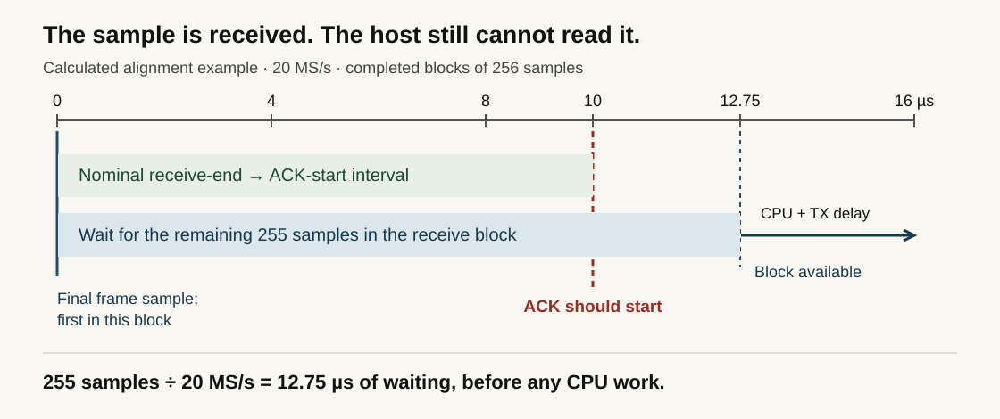
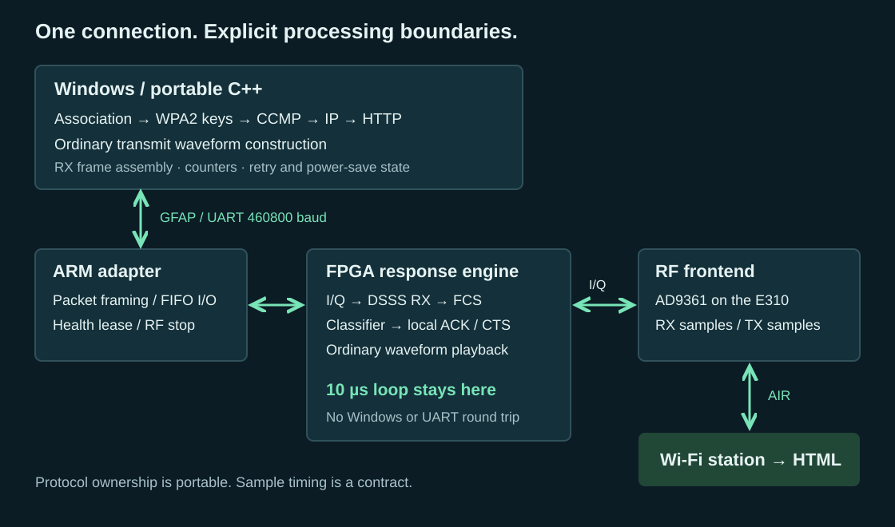
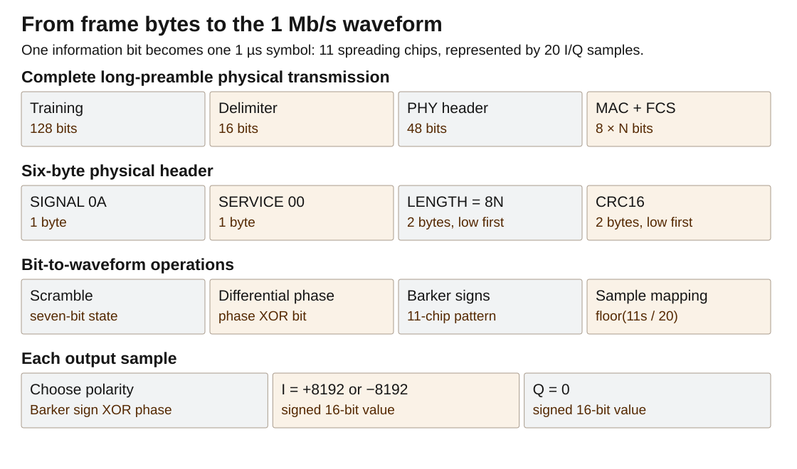
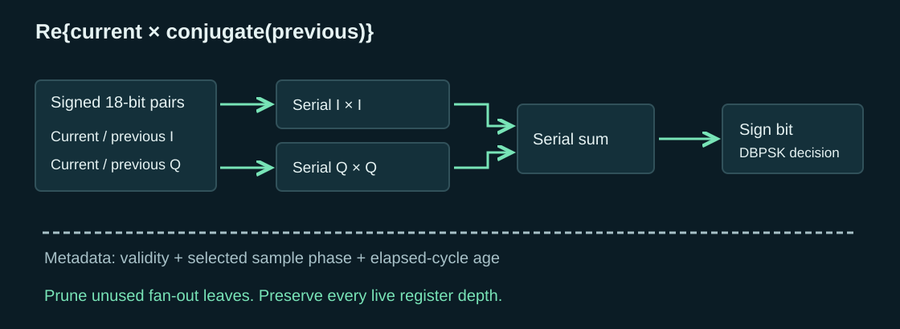
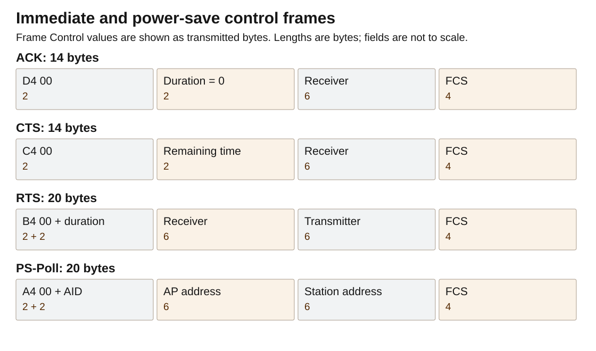
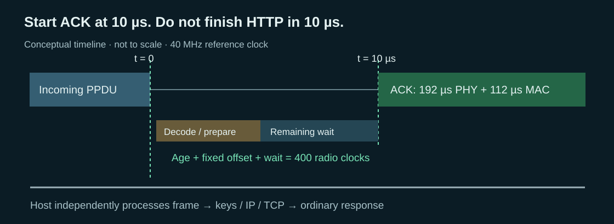
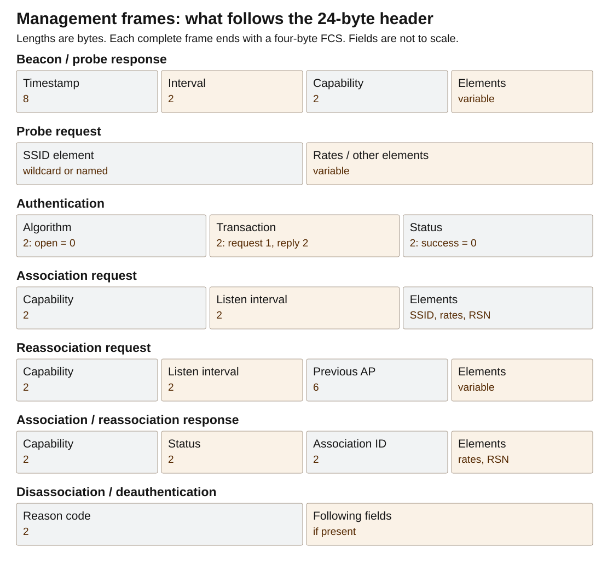
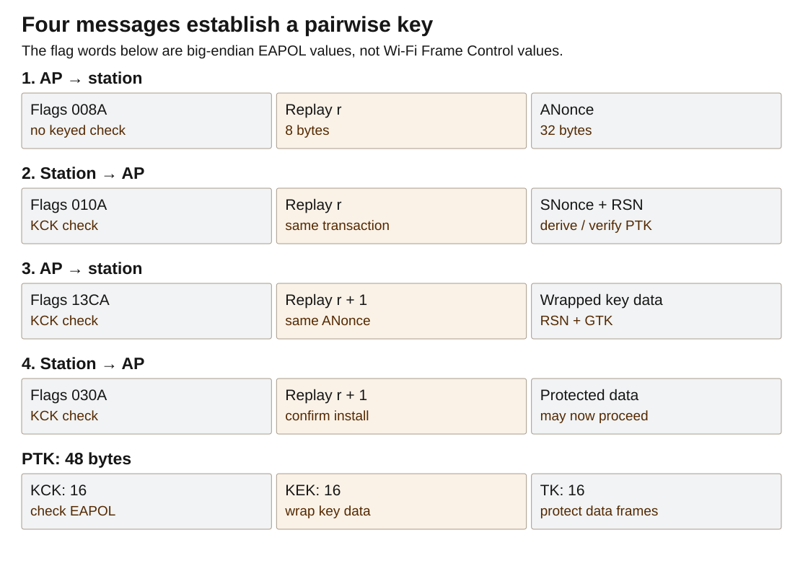
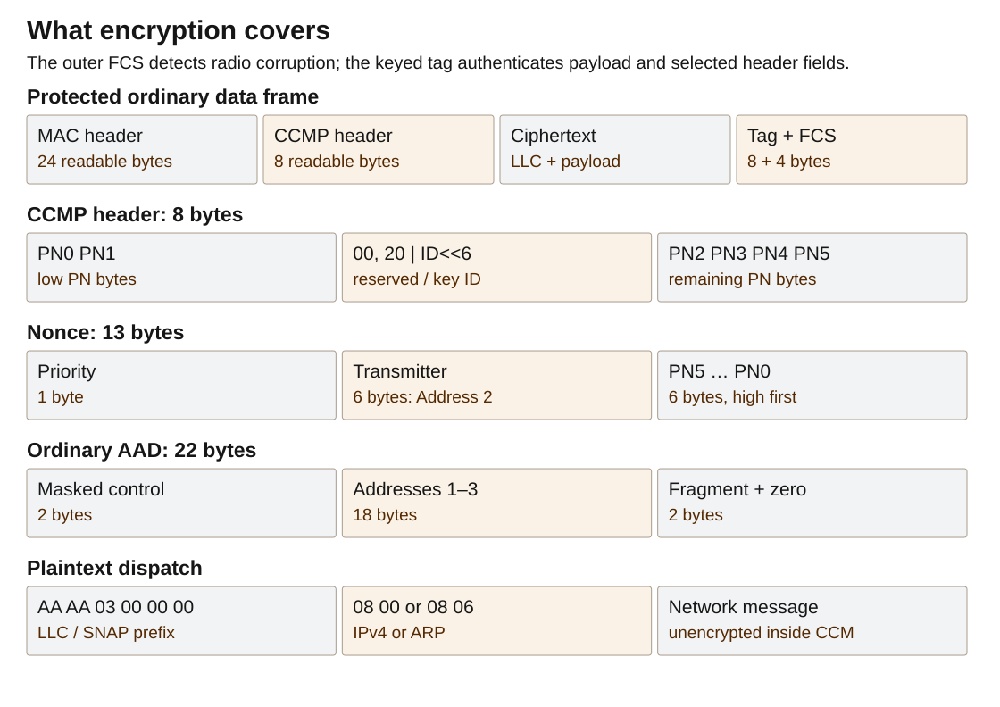

An ordinary buffered SDR can send Wi-Fi packets and still miss the ACK deadline. Here is the FPGA path that closes it, and the C++ stack that carries a client from association to HTTP.
You connect an SDR to a Linux computer, generate a Wi-Fi beacon, and see the network name on your phone. The waveform works. Now the phone sends a frame addressed to your access point. Your receiver decodes it, your software constructs an acknowledgment, and your SDR transmits it. The acknowledgment is correct—and late.
For the 1 Mb/s DSSS radio used here, the immediate reply must begin after a nominal 10-microsecond short interframe space, or SIFS. That interval includes the receive pipeline, the final frame check, the decision to reply, and the transmit path. A sample buffer can consume the interval before the CPU sees the end of the frame.
This is why an ordinary buffered GNU Radio application is not a drop-in access point for stock Wi-Fi clients. The gr-ieee802-11 project documents the same obstacle: its USRP-to-host round trip cannot deliver ACKs in time; RTS/CTS has the same problem. Transmitting and decoding Wi-Fi packets is only part of implementing the protocol.
The access point below closes that immediate-response path in an FPGA. Windows C++ handles association, WPA2-PSK/AES-CCMP, DHCP, ARP, TCP and HTTP. It serves a page through an E310's I/Q frontend to ordinary Wi-Fi clients, without a Wi-Fi MAC/baseband chip.
Download source and build scriptsRead the complete source inline
Start with the objects, not the abbreviations
Follow one path: received samples become an association request, the station and AP establish keys, and encrypted frames carry an HTTP page. The terms below identify the quantities and boundaries used along that path.
A small vocabulary for the whole article
A bit is a binary choice. A byte, also called an octet in network documents, is eight bits. Hexadecimal is a compact way to print bytes: A0 means decimal 160, whose binary spelling is 10100000. How a number is printed is separate from the order in which its bits leave the transmitter. Here that byte is sent least-significant bit first, so its transmitted bit sequence begins 0 0 0 0 0 1 0 1.
A sample is a number describing a signal at a particular instant. The radio interface supplies a pair of signed numbers at each instant. We call them I and Q. A sample pair is not a packet, an encryption block or necessarily a complete data bit. At twenty million sample pairs per second, consecutive pairs are fifty nanoseconds apart.
A symbol is one deliberate signaling choice held for a specified interval. In the one-megabit mode used here, one symbol represents one data bit and lasts one microsecond. There are twenty sample pairs in that interval. Other modulation schemes can carry more than one bit per symbol, but this receiver deliberately avoids those schemes.
A chip has two unrelated meanings in this subject. An integrated-circuit chip is a piece of silicon. A spreading chip is one short positive or negative interval within a radio symbol. The Barker sequence used here has eleven spreading chips per symbol. No extra silicon chip is implied by that word. Eleven million spreading chips per second and one million data bits per second describe the same waveform at two different levels.
Modulation means choosing a waveform property to carry information. We change the sign of a known waveform, which changes its carrier phase by half a turn. Demodulation is the reverse operation: infer the intended choice from noisy received samples. Phase means position within a cycle, measured as a fraction of a turn, degrees or radians. A full turn is 360 degrees or 2π radians. A half turn reverses the sign of a sinusoid.
The word phase will also appear in sample phase and word phase. These are counters, not extra mysterious radio states. Sample phase means which of the twenty sample positions within a candidate symbol we are considering. Word phase means which bit of a forty-clock serial arithmetic word is currently flowing through the circuit. Keeping those three meanings separate prevents real implementation errors.
A frame is one addressed radio message: a header, an optional body and a trailing error check. A packet is a more general term; here an IP packet is one object carried inside a data frame. A TCP segment is an object carried inside an IP packet. An HTTP request is a sequence of application bytes that can span several TCP segments. These are nested envelopes, not four names for the same boundary.
A header contains the information needed to interpret or deliver what follows. A payload is what that particular envelope carries. A trailer comes afterward. The Wi-Fi frame's error check is a trailer; the IP packet's checksum lives in its header. Encryption adds another small header and an integrity trailer inside the radio frame.
The standards use PDU for “protocol data unit,” meaning one complete object at a chosen layer, and SDU for “service data unit,” meaning the content handed to that layer. For this unaggregated, unfragmented path, the complete MAC frame is an MPDU, and the same byte string is the PSDU handed to the physical transmitter. The PPDU is the complete physical transmission after adding its training prefix and physical header. We will usually say radio frame, frame bytes and complete transmission, and show the standard name when it helps identify a field in another implementation.
PHY names the physical-layer work: turn frame bytes into a timed waveform, or timed samples into frame bytes. MAC, when used as a layer name, means medium access control: address frames and coordinate use of the shared radio channel. A MAC address is a six-byte identifier. A cryptographic message authentication code is unfortunately also abbreviated MAC; this article calls that a keyed integrity tag instead.
An access point, or AP, is the station coordinating the local infrastructure network. A station, or STA, is a radio participant; in the examples it is the ESP8266 or phone. The SSID is the advertised network-name byte string. The BSSID identifies this particular radio network, here the AP's six-byte address. A network name is not a unique device identity: two access points can intentionally advertise the same name.
Authentication needs special care. The initial “open-system authentication” frame exchange does not verify the Wi-Fi password. It is an admission-state exchange inherited from the earlier protocol. Password-derived key confirmation happens later in WPA2's four-message key exchange. “Authenticated” in a station-table flag and “cryptographically authenticated plaintext” therefore describe different achievements.
Association means that the AP accepts the station as a member and assigns it an association identifier, AID. That identifier is a small number used, among other things, to tell a sleeping station that the AP has buffered data for it. Association does not assign an IP address. DHCP performs that later, after protected data exchange is available.
SIFS is the short interframe space: the reply gap between the end of an eligible received transmission and the beginning of its immediate response. In this DSSS mode it is nominally ten microseconds. ACK means acknowledgment, but there are three different acknowledgments in the page-fetch path. A Wi-Fi ACK confirms one radio frame. A DHCP ACK confirms address configuration. A TCP ACK confirms receipt of a prefix of a byte stream. They have different formats, scopes and timing.
WPA2-PSK is the password-based security arrangement selected here. PSK means pre-shared key: both ends begin with the same secret rather than consulting an external authentication server. AES is the block-encryption primitive. CCMP is the Wi-Fi construction that combines AES-based encryption with a keyed integrity check and a per-frame packet number. The password is not sent in a frame, and the packet number is not a secret.
IP supplies network addresses. ARP answers “Which local link address represents this IPv4 address?” UDP delivers independent messages identified by port numbers. DHCP uses UDP to negotiate an address. DNS uses UDP here to answer a name lookup. TCP delivers an ordered byte stream, repairing loss through sequence numbers and retransmission. HTTP defines the request and response text carried over that stream. Port 80 is the service number inside TCP, not a radio frequency or an FPGA register.
CRC means cyclic redundancy check. It is a polynomial remainder implemented here using shifts and exclusive-OR operations. The frame check sequence, FCS, is the four-byte CRC appended to a Wi-Fi frame. A CRC detects accidental corruption; someone deliberately changing a frame can recalculate it. A keyed integrity tag is a different operation and requires the secret key.
XOR, exclusive OR, produces one when its two input bits differ. Applied to bytes or words it operates independently on each bit. XOR with zero leaves a bit unchanged; XOR with one flips it. Applying the same XOR twice restores the original. That simple property appears in the scrambler, CRC, encryption counter mode and serial arithmetic, but those circuits serve different purposes.
Latency is elapsed time between a cause and its result. Throughput is the amount of work completed per unit time. A pipeline can have several microseconds of latency while delivering a new result every microsecond once full. Conversely, a fast bulk transfer can deliver a great deal of data while making its first important sample wait too long. The Wi-Fi reply problem is a latency problem with a throughput requirement attached.
One page, nested envelopes
Suppose the application wants to send the five bytes Hello. HTTP puts them after response headers that state the content type and length. TCP numbers those bytes relative to the connection's initial sequence number. IPv4 places the segment between source and destination addresses. The Wi-Fi data wrapper adds a payload-type marker, encrypts that content, then adds radio addresses and an FCS. Finally the physical transmitter adds a synchronization prefix and a physical length header before spreading and modulating every bit.
On reception, remove those envelopes in reverse order, checking each one before trusting the next. The receiver can acknowledge the outer radio frame after its FCS passes without waiting for TCP or HTTP. That division is what allows the time-critical radio path to remain small while the network code stays on the host.
Byte order is a property of a field
The implementation reads integers explicitly instead of casting a byte buffer to a compiler struct. For a two-byte little-endian field, compute b[0] | (b[1] << 8). For a two-byte big-endian field, compute (b[0] << 8) | b[1]. Use unsigned operands wide enough for the shifts. This avoids alignment assumptions, compiler padding and host-endianness mistakes.
Wi-Fi frame-control, duration, sequence-control and many management-body integers are little-endian. IPv4, UDP, TCP and EAPOL length and counter fields are big-endian. MAC addresses are ordered arrays of six bytes, not integers that should be reversed. The SSID is a byte string, not a zero-terminated C string on the air. Its information element supplies its length.
Bit transmission order is another independent rule. The physical transmitter sends bit zero of each byte first. Thus the little-endian bytes D4 00 represent frame-control value 0x00D4, while the first eight transmitted data bits are the least-significant-first spelling of D4. Do not reverse an entire frame because one diagram prints the most significant bit on the left.
At every parser boundary, carry a pointer or index together with a remaining length. Check that the field fits before reading it. For a variable-length item, check the item header first, then its declared content. A length field describes a request to the parser; it does not make those bytes exist. This is as much a correctness requirement for noisy RF as it is a memory-safety requirement for software.
The deadline can expire before the CPU gets the data
A unicast Wi-Fi acknowledgment says that a particular radio frame arrived intact. Before sending one, the receiver must check the destination and the frame check sequence, or FCS. The FCS is at the end of the frame. Earlier bytes reveal whom to acknowledge, but cannot establish that the remaining bytes will arrive correctly.
Receive processing can run while the frame arrives. There is no need to wait for a complete packet before correlating samples, recovering bits or accumulating the FCS. Nevertheless, the final validity decision depends on the end of the incoming signal. Start the timing budget there:
last incoming symbol → remaining receive / FCS work → decision becomes visible to the response controller → transmit trigger and radio-path delay → first outgoing ACK preamble symbol Every delay on this causal path must fit the SIFS budget.
Consider a receiver delivering only completed blocks of 256 complex samples at 20 MS/s. A block occupies 12.8 µs. If the decisive sample lands first in a block, the interface collects another 255 samples before releasing it: 255 / 20,000,000 = 12.75 µs. The nominal 10 µs reply point has passed before software can examine that sample, even if the computation itself takes zero time.

The conclusion follows directly: a response that depends on unavailable data cannot be validly issued before that data becomes available. This particular interface cannot meet the nominal deadline for every frame alignment. A faster CPU cannot remove time already spent waiting at the interface.
Throughput measures something else. At 20 MS/s, signed 16-bit I plus signed 16-bit Q requires 80 MB/s in each direction. Sustaining that rate prevents a growing backlog. It does not guarantee delivery of the last few samples within a microsecond. Larger buffers often improve throughput by amortizing transfers while making this response latency worse.
On PlutoSDR, streaming through USB adds transport and host buffering to the loop. Moving computation onto the E310's nearby ARM removes the Windows/USB leg, but not automatically the receive FIFO, DMA completion policy, cache synchronization, software dispatch or transmit queue. The relevant distance is elapsed time through those interfaces, not millimeters between the ARM and FPGA on a Zynq die.
Linux also need not run the receiving thread immediately. A flowgraph's work batch, another scheduled task, an interrupt or a driver queue can delay it. Removing one source of delay does not bound the rest. A precomputed ACK saves waveform-generation time, but still needs a timely trigger conditional on the received FCS. A timestamp can describe the desired transmit time; it cannot make a late command arrive earlier.
SIFS specifies when the response starts, not when it finishes. A long-preamble 1 Mb/s ACK takes 192 µs of preamble and PHY header plus 112 µs for its 14-byte MAC frame. Its transmission lasts 304 µs. The difficult requirement is starting that transmission after the short gap—not squeezing 304 µs of waveform into 10 µs.
Ten microseconds is a protocol choice, not a law of radio
Wi-Fi shares a channel. A receiver answering the preceding frame gets priority over stations trying to begin a new exchange. The immediate response uses SIFS; a new ordinary DCF transmission waits a longer DIFS and random backoff. For legacy DSSS, a 20 µs slot makes DIFS 10 + 2 × 20 = 50 µs. The ordering protects the current exchange from fresh contenders. RFC 8325 explains the interframe and contention timers.
That ordering does not, by itself, derive the number ten. The May 1995 timing proposal, IEEE 95/81, explicitly distinguishes fixed air-interface intervals from implementation-dependent delays inside a device. Its proposed DS timing table includes a 10 µs maximum. The joint PHY discussion recorded in IEEE 95/91 describes SIFS as receive delay, MAC processing and RX-to-TX turnaround; that meeting gives the frequency-hopping PHY a different budget. These are engineering allocations, not a universal limit imposed by 2.4 GHz propagation.
The subsequent 802.11b draft's PHY table specifies 10 µs SIFS and less than 5 µs receive-to-transmit turnaround. Once a client implements that timing, an access point cannot unilaterally substitute a leisurely software response. The peer's expectations and the channel-access rules still apply. Longer gaps are possible in a differently agreed protocol, at a cost in airtime and latency; they are not a compatible setting that this AP can force onto an unmodified phone.
Other SDR builders hit the same barrier
Shono and colleagues reported it in their 2005 paper, IEEE 802.11 wireless LAN implemented on software defined radio with hybrid programmable architecture. Their VME transfer of a 1,500-byte frame took 40 µs, and the VxWorks interrupt response took 3 µs. They lengthened interframe timing to operate the prototype. That is a concrete published account of the implementation barrier—and of changing the protocol timing rather than meeting the stock-client requirement.
I consider this a substantial cost of the standard's design. A programmer with an I/Q radio cannot replace the Wi-Fi stack as readily as an ordinary network application: the replacement also needs control over microsecond-scale execution and sample delivery. Closed chip firmware makes that dependency harder to escape. A useful challenge to standards designers is to explain the efficiency gained by this timing budget against the implementations it excludes, and whether a negotiable slower-response mode could preserve useful service. Explaining why responses need priority is not the same as proving that exactly 10 µs was the only possible choice.
SIFS is not a WPA2 security check. It predates WPA2. Removing encryption would not remove the acknowledgment deadline.
What a CPU implementation would have to change
A CPU is not forbidden from running these algorithms. It must receive the decisive samples, finish the remaining work and trigger the radio within the actual budget. This requires a bounded low-latency I/O path and execution that cannot be displaced at the wrong moment—not just enough average instructions per second.
Microsoft's Sora paper describes the specific changes: dedicated CPU cores, a custom PCIe radio-control board with a Virtex-5 FPGA and memory, and ACK waveforms prepared or cached on that board before the incoming frame ends. After checking the frame, software triggers the stored reply. The paper also discusses late replies on an initial short frame without a cached ACK. This is evidence for a deliberately engineered CPU processing path, not evidence that loading GNU Radio on an ordinary Linux desktop with a stock buffered SDR meets the same deadline.
The CPU-only E310 work did not produce the required end-to-end stock-client AP. The supplied working implementation therefore keeps the receive-to-ACK path in the FPGA. Its need for that path is an architectural result; it does not establish a physical impossibility for every processor and every possible interface.
Put the deadline-bound path next to the samples
An FPGA runs clocked circuits concurrently. The correlator can accept the next sample while the differential decoder handles a previous symbol, the CRC circuit consumes a previous bit, and the transmit scheduler counts toward a reply. Registers make each stage's latency explicit. None of those circuits waits for a Linux thread to be scheduled.
In this AP, the FPGA receives the sample stream continuously, decodes the frame, checks its FCS and destination, and starts an ACK or CTS locally. It also puts received bytes in a FIFO for software. Copying those bytes to Windows can take much longer than SIFS because the acknowledgment has already been handled.

The E310 reference image uses 2,774 LUTs, 5,185 flip-flops, 14.5 block RAMs and no DSP blocks. Those totals cover the complete image, not a 10 µs timer alone. The radio logic runs at 40 MHz; the processor interface runs at 100 MHz. A flip-flop stores a bit of state or pipeline data, and a LUT implements a small Boolean function. This design spends them on continuously running receive arithmetic, state, buffering, control and sample playback.
The ordinary transmitter does not need to generate a reply to an unknown frame within SIFS. Windows can format it ahead of time and supply a compact waveform description. Conversely, moving only an ACK timer into the FPGA would leave the timer waiting for a late host decision. Receive decoding, final FCS and minimal frame classification belong in the same deadline-bound path in this architecture.
WPA2, DHCP and HTTP remain C++. They need correct state transitions and retries, not a ten-microsecond response to the last RF symbol. The E310 ARM is a packet-and-register adapter in this partition. It does not run the web protocol or hold the station keys.
Turn a bit into a waveform the receiver can recognize
Why two numbers describe one radio signal
The antenna carries a real voltage varying with time. I and Q are coordinates used to describe that voltage relative to a carrier. With one common sign convention, the transmitted voltage is proportional to I(t) cos(2πf₀t) − Q(t) sin(2πf₀t). I controls the cosine-shaped component; Q controls a component displaced by a quarter turn. Adding them produces one real waveform at the antenna, not two independent radio channels.
The pair can also be written as a complex number z = I + jQ, where j² = −1. Complex notation saves bookkeeping. Its real and imaginary coordinates are still ordinary signed numbers in an implementation. Multiplying by j rotates the pair by a quarter turn: (I,Q) → (−Q,I). Multiplying by minus one rotates it by half a turn: (I,Q) → (−I,−Q). No trigonometric table is needed for either operation.
If the transmitter emits (A,0), the receiver does not generally observe (A,0). Cable delays, propagation and the difference between the two oscillators rotate and scale the coordinates. A useful short-interval model is received = gain × transmitted × exp(jθ) + noise. The unknown angle θ is why deciding a bit from the sign of the received I coordinate alone is unreliable.
Consider a transmitter whose two states are (+100,0) and (−100,0). With a 90-degree receive rotation they become approximately (0,+100) and (0,−100). The information is still present, but it moved into Q. With a 45-degree rotation, both I and Q carry part of it. A detector that uses both coordinates works without first forcing the signal back onto the I axis.
The sample rate is the rate of those coordinate pairs, not the RF carrier frequency. Twenty million sample pairs per second represent the changing envelope around a carrier near 2.4 GHz. The RF frontend performs the conversion between that envelope and the antenna waveform. The host does not toggle a GPIO 2.4 billion times per second to generate this signal.
Use a change of sign, not an absolute phase
The selected modulation is differential binary phase-shift keying, DBPSK. In plain language: for a zero bit, keep the preceding symbol's orientation; for a one bit, reverse it. The transmitted state therefore depends on both the current bit and the previous state. “Differential” means that the receiver compares consecutive symbols instead of trying to guess an absolute carrier angle.
Let p be a one-bit phase state. Start it at zero. For each scrambled data bit b, update p = p XOR b. State zero selects the positive waveform; state one selects its negative. For input bits 0,1,1,0,1, the phase states are 0,1,0,0,1. The corresponding signs are +,-,+,+,-. Two consecutive one bits reverse the sign twice; the second one does not mean “remain negative.”
The inverse operation is also a comparison: b[k] = p[k] XOR p[k−1]. With complex received symbols, use the sign of their dot product instead. Let the previous recovered symbol be (Iₚ,Qₚ) and the current one be (I𝚌,Q𝚌). Compute d = I𝚌Iₚ + Q𝚌Qₚ. A positive result means broadly the same direction, so the differential bit is zero. A negative result means opposite directions, so it is one. The implementation takes the sign bit of the signed result.
For example, previous (300,400) and current (270,360) produce 270×300 + 360×400 = 225000, a zero bit. Current (−270,−360) produces −225000, a one bit. The receiver never needed to calculate the angle of (300,400). It needed two signed products and an addition.
The complex derivation is useful because it shows exactly what was removed. Multiply the current symbol by the conjugate of the previous symbol: (I𝚌+jQ𝚌)(Iₚ−jQₚ). Its real part is the dot product above. A constant unknown carrier rotation appears once with a positive exponent and once with a negative exponent, so it cancels. This receiver needs only that real part, not the imaginary part or an arctangent.
A frequency offset does not cancel completely because the phase rotates between symbols. Ignoring noise, the useful result is multiplied by cos(2πΔfT), where Δf is the frequency difference and T is one microsecond. A ninety-degree change per symbol would drive this projection to zero. That idealized angle occurs at 250 kHz. It is not a measured tolerance specification for the complete receiver: filtering, noise, timing error and other impairments reduce the usable margin.
The radio bit being recovered at this stage is the scrambled bit. The descrambler comes afterward. Confusing a recovered phase sign with the final payload bit produces a stream that may look active but will never pass the physical header's check.
Why spread one bit into eleven signs
Before transmission, each symbol's sign multiplies an eleven-entry pattern. The pattern used by this implementation, written in transmission order, is + − + + − + + + − − −. If the differential phase state is zero, transmit that pattern. If it is one, transmit its negative. Each entry occupies one eleventh of a microsecond, so the pattern repeats at the one-megahertz symbol rate while its spreading-chip rate is eleven megahertz.
This is the eleven-chip Barker sequence family. Barker's construction is valuable because a sequence agrees strongly with itself at the correct alignment but poorly with shifted copies. Some publications print the reversed or sign-inverted version. Either transformation preserves the relevant correlation property; the transmitter and receiver must nevertheless agree on the exact order and polarity convention they implement.
To see the mechanism, multiply each received entry by the corresponding expected sign and add. A perfectly aligned positive pattern gives eleven positive products and a sum of +11. Its negative gives −11. A shifted finite pattern gives much smaller sums. In the ideal eleven-chip sequence, nonzero-shift aperiodic correlation magnitudes do not exceed one. “Aperiodic” means that entries shifted beyond the finite sequence are not wrapped around to the other end.
The actual sampled receiver does not get eleven pristine signs. It gets twenty complex sample pairs per symbol, with analog filtering, unknown amplitude, noise and possibly echoes. It uses the sampled version of the expected pattern as an adding-and-subtracting template. The Barker property explains why this is useful; it does not make every practical correlation sidelobe exactly one or guarantee that interference disappears.
Spreading is not encryption. Anyone knowing the public pattern can apply the same correlation. Nor does the pattern add an independent eleven-bit error-correcting codeword for each payload bit. It spreads the symbol's energy across a wider waveform and supplies structure the receiver can match. The receiver still makes one binary decision per symbol, and later CRC and keyed integrity checks decide whether the recovered frame is usable.
Map eleven spreading chips onto twenty samples
The implementation's transmitter uses a fixed rectangular twenty-sample approximation. For sample index s from zero through nineteen, choose spreading-chip index floor(11s/20). That mapping is exact integer arithmetic; it does not require a resampling library for this particular waveform descriptor. It assigns either one or two sample positions to each chip, so the total remains twenty samples per microsecond.
| Sample positions | Chip index | Template sign |
|---|---|---|
| 0, 1 | 0 | + |
| 2, 3 | 1 | − |
| 4, 5 | 2 | + |
| 6, 7 | 3 | + |
| 8, 9 | 4 | − |
| 10 | 5 | + |
| 11, 12 | 6 | + |
| 13, 14 | 7 | + |
| 15, 16 | 8 | − |
| 17, 18 | 9 | − |
| 19 | 10 | − |
For each position, XOR the template's negative flag with the differential phase state. Select I = −8192 if the result is one, otherwise I = +8192; set Q = 0. These are signed sixteen-bit sample coordinates in the digital interface. They are not volts, watts or calibrated antenna power. RF gain and the frontend's scaling determine the analog output.
negative = [0,1,0,0,1,0,0,0,1,1,1]
for each scrambled bit b:
phase = phase XOR b
for s = 0 .. 19:
chip = floor(11*s/20)
sample.I = (phase XOR negative[chip]) ? -8192 : +8192
sample.Q = 0
emit sample at the next 50 ns sample instantThe WF20 descriptor encodes this rectangular waveform. A pulse-shaped transmitter needs a representation of the filtered samples and corresponding receive and timing validation.
At 1 Mb/s, the complete long-preamble transmission lasts 192 + 8N microseconds for N frame bytes, including the four-byte FCS. Its sample count is 20 × (192 + 8N). A 14-byte acknowledgment therefore occupies 6,080 sample pairs and lasts 304 microseconds. The preceding ten-microsecond gap is the time until that waveform must start, not the time available to finish sending it.
Keep sample rate, symbol rate and implementation clock distinct
The sample interface runs at 20 MS/s. The physical data decisions run at 1 Mb/s. The FPGA radio logic is clocked at 40 MHz. These three numbers describe different schedules. A sample arrives every two logic clocks; a complete symbol occupies forty logic clocks. The receiver must update sample-level history continuously while producing one selected symbol decision every forty clocks.
This difference in schedules is the opportunity for serial arithmetic. A multiplication needed once per symbol does not need a new operand pair on every 40 MHz clock. It can consume its operands bit by bit across the forty available clocks, provided it finishes with a known latency and can accept the next word without a gap. The sample correlator has a different obligation: it evaluates potential alignments at the sample cadence, so it cannot simply be replaced by the same one-operation-per-symbol schedule.
A processor implementation must obey the same distinction. Completing the average number of multiplications per second is not sufficient if it pauses long enough to overflow the sample stream or delivers the final frame decision after the response deadline. Conversely, an FPGA implementation is not automatically correct merely because its arithmetic is parallel. It must preserve the relationship between each result and the sample instant that caused it.
Build the physical transmission, byte by byte

The physical transmitter accepts a complete radio frame, including its four-byte FCS. It does not need to know whether the body contains a beacon, a key exchange or an encrypted TCP segment. It needs the frame's length and its bytes. The same physical wrapper carries every frame type in this one-megabit implementation.
Construct a plain bit stream in four consecutive regions: 128 training bits, a sixteen-bit delimiter, a forty-eight-bit physical header, then the frame bytes. Scramble this entire stream continuously, differentially encode it, multiply each resulting symbol sign by the Barker pattern and produce the sample pairs. Do not reset the scrambler or the differential phase at the transition from header to payload.
The training prefix gives the receiver time to become a receiver
The 128 plain training bits are all ones. On the air they are not a constant positive waveform, because scrambling and differential modulation happen afterward. The receiver uses this interval to collect enough history, find a useful symbol alignment, establish a previous-symbol reference and synchronize its descrambler. Those tasks are why a packet does not begin immediately with the first address byte.
At startup the receiver does not know which of the twenty sample positions is the end of a symbol. It can examine candidate alignments during training. Nor does it know the transmitter's seven-bit scrambler history. Because the scrambler is self-synchronizing, receiving enough scrambled bits establishes the needed history without sending a separate seed field.
The sender initializes its scrambler to 0x5D and its differential phase state to zero for a new complete transmission. The receiver does not require knowledge of that seed to recover later bits. Its initial decisions may be meaningless; the long prefix provides room for that transient to disappear before the delimiter and physical header arrive.
The delimiter says where structured fields begin
The next sixteen plain bits are 0 0 0 0 0 1 0 1 1 1 0 0 1 1 1 1. In a least-significant-bit-first byte buffer, store them as A0 F3. The receiver recognizes this pattern after the training run and then starts collecting the physical header. It is called the start-frame delimiter, SFD, although the addressed MAC frame does not begin until after the physical header.
A delimiter is not magic. It is a particular sequence at a particular point in the receiver's state machine. Searching for its sixteen bits everywhere in arbitrary payload data would find accidental matches. This receiver first recognizes a run of training ones, opens a limited delimiter-search interval and accepts the delimiter on the selected timing phase. The header CRC supplies a further independent check before frame delivery begins.
When implementing a shift-register matcher, write down which end receives the new bit. If you shift older bits left and append the newest bit at the low end, the printed register constant differs from the byte-order representation used by the transmitter. The received sequence is the invariant; a hexadecimal constant in a drawing is not sufficient to specify the shift direction.
The six-byte physical header
| Byte offset | Size | Plain meaning | Value here |
|---|---|---|---|
| 0 | 1 byte | How fast the following frame is modulated | 0A: 1 Mb/s |
| 1 | 1 byte | Physical service flags | Transmit 00; receive permits 00 or 04 |
| 2 | 2 bytes | Duration of the following frame | 8 × N microseconds, little-endian |
| 4 | 2 bytes | Check of the preceding four bytes | CRC-16, little-endian |
The traditional name is the PLCP header: physical layer convergence procedure. Its job is simpler than its name. It tells the receiver how to interpret and how long to receive the following frame, and protects that instruction with an error check. The LENGTH field does not include the training prefix, delimiter or physical header.
For a 14-byte ACK, the frame duration is 112 microseconds. The first four physical-header bytes are therefore 0A 00 70 00. For a 100-byte frame they are 0A 00 20 03, since decimal 800 is hexadecimal 0320. At this one-bit-per-microsecond rate, converting a valid duration back to bytes means dividing by eight.
The receiver requires a nonzero duration divisible by eight and a resulting size within its configured frame capacity. It also requires the supported rate code. A corrupted header saying that a short frame is thousands of bytes long must not leave the parser collecting the next unrelated transmission as if it were the remainder of the first one.
The SERVICE exception is important. The received frame may set bit two to indicate that the transmitter's carrier and chip clocks share a reference. That does not change the one-megabit payload format. The surviving receive test is (service & 0xFB) == 0, so both 00 and 04 pass. Requiring byte zero exactly discarded valid ESP8266 frames. This is an example of a field whose meaningful alternative must be understood rather than copied from the transmitter's favorite value.
Compute the physical header's CRC
Keep a sixteen-bit state initialized to all ones. Feed the first four header bytes, bit zero first. For each input bit, XOR it with the low state bit, shift the state right by one and conditionally XOR 0x8408. After the last bit, invert all sixteen state bits. Append the resulting low byte followed by the high byte.
crc = 0xFFFF
for byte in [rate, service, length_low, length_high]:
for bit_index = 0 .. 7:
mix = (crc XOR (byte >> bit_index)) AND 1
crc = crc >> 1
if mix: crc = crc XOR 0x8408
crc = crc XOR 0xFFFF
emit crc AND 255
emit (crc >> 8) AND 255The usual polynomial notation is x¹⁶ + x¹² + x⁵ + 1. The hexadecimal constant above is its reflected implementation form, chosen for a right-shifting register and least-significant-first input. Changing the shift direction without changing the representation changes the calculation. The initialization and final inversion are equally part of the algorithm.
This CRC covers the rate, service and length fields only. It does not cover the delimiter, training prefix or MAC frame. The MAC frame has its own CRC-32. Keeping the two checks separate lets the receiver reject a damaged length instruction early while continuing to check the much longer frame as its bits arrive.
A simple software verifier can recompute the CRC from the four received header bytes and compare the two transmitted bytes. A streaming circuit can keep the same recurrence without buffering the entire header. At the final CRC bit, include the bit arriving on that clock in the comparison; do not compare against a register that will receive it only after the clock edge.
Scramble the bit stream without hiding it
The scrambler keeps seven recent output bits. For each plain input bit u, compute v = u XOR state[3] XOR state[6]. Emit v, then update state = ((state << 1) | v) & 0x7F. The feedback bit is the scrambled output v, not the original input u. That choice makes the receive operation self-synchronizing.
The receiver keeps the same seven-bit history of received scrambled bits. Given a new scrambled bit v, recover u = v XOR history[3] XOR history[6], then shift v into the history. After seven received bits, both histories contain the same transmitted bits regardless of their initial values. Errors during that transient are harmless only because the receiver is still in training, not delivering application data.
For the chosen seed 0x5D, the state bits needed for the first plain training one are both one, so the first scrambled output is one. The state then changes. Recalculate the two taps for the next bit; do not reuse the original seed's taps throughout a byte. The operation is a bit recurrence, even when software processes eight bits in a loop.
Scrambling prevents a long repetitive plain sequence from becoming an equally simple repeated modulation decision. It is publicly reversible and uses no secret key. It therefore supplies neither confidentiality nor resistance to deliberate modification. WPA2 encryption occurs much earlier, when building the contents of a data frame, and the physical scrambler then treats encrypted and unencrypted frame bytes identically.
The frame's four-byte error check
Before adding the physical wrapper, calculate CRC-32 over the entire MAC frame except its not-yet-appended FCS. Start at 0xFFFFFFFF. XOR each byte into the low eight bits of the state, then repeat the right-shift and conditional-XOR step eight times with constant 0xEDB88320. Invert the final state and append its bytes least significant first.
crc = 0xFFFFFFFF
for byte in radio_header_and_body:
crc = crc XOR byte
repeat 8 times:
low = crc AND 1
crc = crc >> 1
if low: crc = crc XOR 0xEDB88320
fcs = crc XOR 0xFFFFFFFF
append_little_endian_32(fcs)Use an unsigned thirty-two-bit state so the right shift inserts zeros rather than copying a sign bit. The common check string 123456789, interpreted as nine ASCII bytes, produces 0xCBF43926 with this CRC convention. Its transmitted FCS bytes are 26 39 F4 CB. This is a useful first implementation test because it catches several reflection and byte-order errors before RF is involved.
In the receive circuit, every frame bit including the transmitted FCS can pass through the same recurrence. With the matching initialization and bit order, a correct complete frame leaves the known residue 0xDEBB20E3 before final inversion. The circuit compares that residue instead of storing the entire frame merely to recompute a checksum at the end. Software can independently compare a recomputed CRC against the trailing four bytes.
CRC success is permission to treat the received outer frame as intact, not permission to release encrypted content. The radio ACK can depend on CRC success. WPA2 decryption later requires a valid keyed tag and a fresh packet number. A receiver may therefore acknowledge a radio frame that the higher-layer security code subsequently rejects.
A compact waveform description replaces bulk I/Q transfer
The ordinary host transmitter knows the complete frame before sending it. It can perform all bit formatting in C++ and describe the resulting waveform compactly. In this implementation, every sample is one of two I/Q values and every symbol uses the same twenty-position polarity pattern. Sending millions of repeated sample coordinates over the serial link would waste bandwidth without conveying additional information.
The descriptor begins with three bytes holding the twenty-bit negative-position mask, then one byte containing the pattern length twenty. It carries a packed positive I/Q value and a packed negative I/Q value, four bytes each. The remainder contains one differential phase bit for each physical bit, packed eight per byte. The header is twelve bytes; the phase-bit body has twenty-four prefix/header bytes plus N MAC-frame bytes.
The prefix length of twenty-four bytes is (128 + 16 + 48) / 8. Therefore the descriptor length is N + 36 bytes, while the uncompressed sample stream would contain 80 × (192 + 8N) bytes using four bytes per sample pair. Both representations describe the same fixed waveform. The descriptor does not promise to compress arbitrary modulated I/Q with that ratio.
Playback maintains a sample-position counter from zero through nineteen, a phase-bit index and the two sample values. At each sample tick it selects the proper sign, emits one pair and advances the position. After position nineteen it advances to the next phase bit. Once a transmission starts, the output cannot pause because a bus transaction is late. Such a pause would stretch the radio symbol and change the modulation.
The immediate ACK/CTS transmitter is a separate case. It cannot wait for Windows to construct and send a descriptor after an unknown incoming frame. It creates its small response locally from the received sender address, duration and frame-check result. Ordinary host-formatted transmissions and immediate replies share the RF output but not the same causal preparation path.
Recover frame bytes from samples that arrive at an unknown alignment
The transmitter begins with clean bytes and a known start time. The receiver begins in the middle of an arbitrary sample stream. It must discover the start, select a symbol alignment, recover differential bits, synchronize its descrambler, validate the physical header and deliver exactly the declared number of frame bytes. A useful receiver design makes those stages explicit instead of hiding them behind one “decode Wi-Fi” function.
Maintain a twenty-sample sliding window
Keep the twenty most recent I samples and the twenty most recent Q samples. On each valid sample pair, discard the oldest pair and append the newest. Suppress correlation validity until twenty fresh pairs have arrived after enable or reset. A delay register containing an old sample is not automatically a valid part of the next acquisition epoch.
Match the window against the twenty-position template from the transmitter. In oldest-to-newest order, add samples at positive template positions and subtract samples at negative positions. Do this independently for I and Q. The result is one complex correlation value, C = Cᵢ + jCq, for that window alignment.
C_I = 0; C_Q = 0
for position = 0 .. 19:
sign = template[position] // +1 or -1
C_I += sign * window_I[position]
C_Q += sign * window_Q[position]
The apparent multiplication by sign is just conditional negation. There is no reason to allocate a general multiplier for a coefficient that is always +1 or −1. First sign-extend the sixteen-bit sample into the accumulator width, then negate if required. Negating the most-negative sixteen-bit number within sixteen bits would overflow; widening first preserves its positive counterpart.
The working correlator uses signed twenty-four-bit sums. Twenty times the magnitude of a full-scale signed sixteen-bit sample is at most 655,360, so that width leaves headroom. The arithmetic reduction is expressed as a balanced tree: pair the twenty terms, pair those sums, then combine the remaining groups. A source-language accumulation loop can synthesize into a long dependent adder chain unless the structure is made clear.
Correlation is evaluated at every sample position, not just once every twenty samples from an arbitrary startup origin. Otherwise the receiver would assume the correct symbol boundary before it had discovered it. At 20 MS/s there are twenty integer-sample candidate phases within the one-microsecond symbol period.
Choose the useful sample phase before doing the expensive comparison
Maintain a score for each candidate phase. The working design uses a cheap magnitude estimate, |Cᵢ| + |Cq|, not a square root or a sum of squared magnitudes. For the currently visited phase, update score = score − (score >> 4) + magnitude. The shift removes approximately one sixteenth of the old score on each update, so recent correlations matter more than old noise history.
This is a leaky accumulator. If the input magnitude stayed constant at M, the score would settle near 16M, with integer-rounding effects. Its purpose is to rank candidate alignments over the training prefix. It is not a calibrated power measurement and must not be labeled dBm. Absolute-value addition is adequate for this ranking without adding more variable-by-variable multipliers.
The receiver tracks the strongest score and its phase. While searching, it can switch the candidate at a symbol boundary. After eight consecutive recovered training ones, it holds that candidate through the delimiter search. An early zero before sufficient training allows acquisition to resume. The selected phase supplies one differential decision per microsecond; the other nineteen phases still contribute correlation scores.
This order removes unnecessary work. Twenty candidate alignments do not require twenty continuously active differential decoders and twenty scramblers once a useful timing phase has been selected. The accepted receiver keeps one such context. It still examines the twenty correlations so that selecting one context does not mean blindly throwing away timing information.
Phase selection is also part of the response-timing problem. Several nearby alignments may recover the same long run of bits. They need not assign the same instant to the end of the packet. Selecting a strong complete Barker-window alignment makes the final frame boundary meaningful for the acknowledgment scheduler, instead of accepting any phase that happened to decode a header.
Compare consecutive selected correlations
For each selected phase sample, retain the correlation as the previous symbol for the next comparison. The first selected correlation after a reset or phase change has no valid predecessor, so it cannot produce a differential bit. A separate validity flag expresses that condition. Initializing the previous numeric value to zero is not a substitute: a zero dot product is a number, not evidence of a received symbol.
The accepted arithmetic shifts each twenty-four-bit correlation right by three and presents signed eighteen-bit operands to the two-product detector. This is the same scaling used before replacing the parallel multipliers. It is not a later precision cut used to make the serial implementation look smaller. With the actual twenty-tap IQ16 sum range, division by eight places the values within signed eighteen-bit range.
Use an arithmetic right shift so negative values remain negative. In a portable software implementation, make the intended rounding convention explicit. For instance, shifting −9 right by three with sign extension gives −2, whereas integer division by eight in C++ truncates toward zero and gives −1. Those choices can differ near a weak decision boundary, even though both preserve the broad scale.
The detector computes the full signed products and their full signed sum. It takes only the final sign for the DBPSK bit, but that does not justify throwing away low product bits before addition. Two large nearly cancelling products may leave a small positive or negative result. Truncating each product separately can change that sign.
A concrete cancellation example is 1000×1000 + (−999)×1001 = 1. Each term has magnitude near one million, but the correct sum is positive one. A detector that rounds the terms coarsely before adding can turn the decision into zero or a negative result. Keeping full products makes the result depend on the actual arithmetic rather than the truncation order.
Descramble before searching for the delimiter
The sign of the dot product is the scrambled bit. Feed it into the self-synchronizing receive recurrence described earlier. Count consecutive recovered plain ones during acquisition. The actual receiver opens delimiter search when a zero follows a run of at least 87 ones. The long transmitted prefix contains 128 plain ones, leaving room for startup, phase selection and descrambler convergence before this condition is satisfied.
The first zero begins a bounded search window of 31 following bit opportunities. Shift each recovered plain bit into a sixteen-bit register. With the register convention used here, the delimiter comparison is 0x05CF. That is the sixteen-bit sequence already shown, interpreted as a shift-left history of arriving bits; it is not a contradiction of the transmitter's A0 F3 byte buffer.
Once the delimiter matches, stop treating those bits as acquisition evidence. Lock the phase for this frame, reset the physical-header bit index and initialize its CRC. The next forty-eight bits have assigned fields. The receiver must not continue running a general delimiter search through them or through the encrypted payload.
Make state transitions occur on actual bits
The parser has three main states: searching for the delimiter, collecting the physical header and collecting the frame. The implementation names them SEARCH_SFD, READ_PLCP and READ_PSDU. Those names are labels for three concrete operations, not additional protocol layers.
Search: score sample phases → recover training ones → match delimiter.
↓
Read header: collect rate, service, duration and CRC → accept or return to search.
↓
Read frame: emit exactly duration/8 bytes → mark the final byte and its age → return to search.
During header collection, place bit positions zero through seven in SIGNAL, eight through fifteen in SERVICE, sixteen through thirty-one in LENGTH, and thirty-two through forty-seven in the received CRC. Update the calculated CRC only for the first thirty-two bits. On bit forty-seven, compare the completed received CRC, including the current bit, and apply the rate, service and length tests.
During frame collection, place each recovered bit into its byte position from zero through seven. On bit seven, emit the completed byte. Mark the first emitted byte with a start indicator and the declared final byte with an end indicator. The emitted frame includes the FCS. Both the local frame checker and host packet assembler need an unambiguous view of those boundaries.
If the physical header is invalid, discard the candidate and return to searching. If enable is removed or the serial detector reports an impossible scheduling overrun, invalidate the current receive context. Do not deliver a plausible prefix as a complete frame, and do not splice bytes from a later acquisition onto an abandoned frame.
A delayed bit must retain its original time
The receive arithmetic is pipelined. When a final byte appears at an output register, the corresponding radio sample is already old. The receiver carries an age value describing how many logic clocks have elapsed since the relevant frame-ending sample boundary. The local scheduler uses this age to subtract time already consumed.
This is not optional bookkeeping. Suppose a new arithmetic stage delays every decoded bit by forty clocks. If the scheduler still starts a fresh 400-clock timer when the last byte arrives, the ACK starts one microsecond later than before. If the age increases by the same forty clocks and the remaining wait decreases accordingly, the intended over-air response time stays unchanged.
There are several places to lose that relationship: a correlation window can be one sample newer than its predecessor, a metadata queue can advance on a different word boundary than the arithmetic, or a reset can clear the decoder while leaving old products in flight. Each produces correct-looking numbers attached to the wrong symbol or time. A good implementation tests both the result bits and the reconstructed physical boundary.
The chosen serial detector accepts one request every forty clocks. A request retains the two current and two previous signed operands, the selected sample phase, a local clock tick and the incoming age. The numeric graph continues running without gaps. When the result's sign emerges, its matching metadata supplies the accumulated age and phase. A phase change clears pending validity so an old result cannot alter the new phase's descrambler history.
Remove the requirement for dedicated multiplier blocks
Replacing the receiver's two working DSP48 multipliers removed a hardware dependency: the differential detector could now be built from one-bit logic and registers on a device without hard multiplier blocks. The iCE40 LP/HX architecture, for example, supplies LUTs, flip-flops and carry logic but no hard DSP multiplier. This change makes the detector's arithmetic portable to that resource set. Fitting the complete receiver also requires mapping its buffers, sample-rate correlation and interface logic to the destination device.
The operation is exactly I𝚌Iₚ + Q𝚌Qₚ, with signed eighteen-bit operands. A direct HDL expression can map efficiently into the E310's two DSP48s. On a part without those blocks, the same expression needs a soft implementation. The Greenforest continuous bit-serial multiplier provides a specific alternative: stream the operand bits through registered partial-product and serial-adder trees, preserve full precision, and start the next word without a gap. This is an explicit circuit and schedule, not a request that synthesis somehow make a parallel multiply cheap.
The enabling change was twenty timing candidates to one detector
The first receiver did differential detection for all twenty possible symbol alignments. At 20 million samples per second, the multiplier pair received new operands every 50 nanoseconds: only two clocks in the 40 MHz radio domain. A forty-clock serial graph cannot accept that workload in one lane. Its input rate would be twenty times too low. Merely replacing * in that receiver would not work.
Acquisition still needs to compare all twenty alignments, but payload detection needs only the selected alignment. The accepted change kept every full-precision Barker correlation and timing score, then selected one phase before differential decoding and delimiter detection. Eight recovered preamble ones hold that phase; the longer delimiter qualification still checks it. Differential detection now receives one operand set per microsecond, leaving forty clocks between sets.
That twentyfold reduction in the detector's required initiation rate is what made a single continuous serial dot-product graph practical at the existing clock. It did not divide the ADC rate by twenty or omit nineteen twentieths of the samples from acquisition. The sample-rate correlation remained intact. A phase change invalidates old in-flight decisions so that results from one candidate cannot enter another candidate's descrambler.
The replacement therefore trades dedicated DSP hardware for scheduled LUT/register arithmetic. Its longer latency is permitted because the graph overlaps successive words and reports the age of each result to the reply scheduler. It neither removes the FPGA response path nor relaxes the client's SIFS timing.
Serialize the value, not the work schedule

An eighteen-bit signed number is sent least-significant bit first, followed by copies of its sign bit until the arithmetic word has forty bits. Every input has one bit on every clock. The next operand word begins immediately after the previous word's fortieth bit. There is no “wait until done, then start again” gap between words.
This distinction is the meaning of bubbles-free in the multiplier interface. It does not mean zero latency. The first output product bit follows the corresponding first input bit by thirteen clocks. The additional serial adder for the dot product adds one clock, making fourteen. The final sign bit of a forty-bit sum therefore appears fifty-three clocks after the corresponding first input bit: thirty-nine bit positions plus fourteen clocks of pipeline offset.
At 40 MHz, fifty-three clocks are 1.325 microseconds. Nevertheless, after the pipeline fills, the graph produces one complete dot-product decision every forty clocks, or one microsecond. Two words can be in flight at once. A receiver that assumes latency must be shorter than the interval between inputs would reject a perfectly valid pipeline architecture.
The adapter surrounding the graph has additional word-alignment and handoff registers. Its source explicitly accounts for the result being consumed fifty-five clocks after the preceding loading boundary. That local number is not an over-air ACK latency. It is one component of the age that travels with the result and is subtracted from the final reply budget.
Build a serial adder from a sum bit and a carry bit
For current input bits x and y and carry c, compute sum = x XOR y XOR c. The carry for the next bit is one when at least two of x, y and c are one: next_carry = (x AND y) OR (x AND c) OR (y AND c). Register the sum and carry. On the next clock the inputs are the next-more-significant bits.
For example, add decimal three and five using four-bit least-significant-first words. Their streams are 1,1,0,0 and 1,0,1,0. Bit zero produces sum zero and carry one. Bit one produces sum zero and carry one. Bit two again produces sum zero and carry one. Bit three produces sum one and carry zero. The output stream 0,0,0,1 is decimal eight. The circuit needed one stored carry, not a carry chain spanning four bit positions in one clock.
A register in the sum path shifts the relationship between input bits and output bits. The carry reset must follow the same word framing. In this implementation, the final input bit of a word is processed with the carry accumulated from the earlier bits, then the stored carry is cleared so the next word begins cleanly. Clearing one clock too early corrupts the most significant result bit. Clearing one clock too late lets the preceding word's overflow contaminate the next word's bit zero.
This is why a pipelined serial graph needs control timing as carefully designed as data timing. A word-end pulse is a stream with its own latency. Adding a register to an arithmetic branch without moving the corresponding clear pulse does not simply make the circuit one clock slower; it can make adjacent products numerically interact.
Multiplication is a sum of delayed partial products
For an unsigned W-bit operand A, write A = Σ aᵢ2ⁱ. Then A×B = Σ aᵢ(B << i). Each bit aᵢ either contributes a shifted copy of B or contributes zero. In serial form, shifting the contribution by i bit positions is a delay of i clocks within the word. An AND gate supplies the partial-product bit.
The generic forty-bit graph retains the necessary A bits, delays B through the partial-product lanes and combines those one-bit streams through a registered reduction tree. The arithmetic result is exact modulo 2⁴⁰, meaning it contains the low forty bits of the product. This modular interpretation is not a loss for the signed eighteen-by-eighteen use case: the complete signed result fits inside those forty bits when the operands are sign-extended correctly.
Each reduction level combines pairs of serial streams using the serial adder. A balanced tree keeps the number of registered levels logarithmic in the number of partial rows. The generic implementation pads forty active rows to a sixty-four-leaf tree, giving six reduction levels. The extra leaves are zeros. Later specialization removes arithmetic that only processes those known zeros while preserving the delay of live paths.
The operands also need distribution. A single serial input driving many distant rows is no longer a small local timing problem, even if its Boolean operation is simple. Registered binary duplication trees copy the bit so each fast dependency drives at most two loads. This spends registers to keep the dependency local and the latency explicit. It is part of the circuit, not an incidental synthesis-tool option.
Signed eighteen-bit operands collapse forty rows to eighteen
A signed eighteen-bit two's-complement number has the exact expansion A = Σ(aᵢ2ⁱ, i=0…16) − a₁₇2¹⁷. The sign bit contributes a negative row. When the number is sign-extended to forty bits, the repeated upper sign bits are not independent information. Their many apparent unsigned partial rows can be replaced algebraically by that one negative contribution.
The specialization therefore uses seventeen positive partial rows and one negative row. It does not reduce the eighteen-bit operand width. It does not keep only the sign of an approximate product. It computes the same low-forty-bit result as the generic graph for sign-extended eighteen-bit inputs.
To negate a least-significant-first binary stream, pass bits unchanged through and including its first one, then invert every later bit in the word. This implements two's-complement negation without a wide parallel subtractor. A one-bit “have seen the first one” state is enough. Clear that state at the word boundary using the correctly delayed marker.
For a four-bit example, decimal six is 0110, whose least-significant-first stream is 0,1,1,0. Pass the first zero and first one; then invert the remaining one and zero. The output is 0,1,0,1, the stream for 1010, which represents minus six in four-bit two's complement. The zero word stays zero because no first one occurs.
The negative-row preparation stage adds one registered delay. Reducing eighteen active rows needs five reduction levels rather than the generic six. The added preparation register replaces the removed level, preserving the original thirteen-clock product-bit latency. Preserving the interface timing avoided redesigning the already-working receiver's word schedule.
Keep the complete sum even though the final answer is one bit
Each signed eighteen-by-eighteen product needs thirty-six signed bits. Their sum needs thirty-seven, because two large positive products can require an additional bit. The forty-bit graph therefore retains the entire result, and bit thirty-nine is a valid sign extension of that full signed sum. The unused upper capacity is framing and headroom, not discarded numeric information.
Two multiplier streams feed one more registered serial adder. The sum's word-end marker is delayed alongside the sum bit. The receiver samples the final sign when that marker identifies the end of the correct forty-bit word. Looking at the sum output on any arbitrary clock would read one of the product's ordinary bit positions, not necessarily its sign.
For the signed extremes, an input can be −131072 through +131071. The positive product of two minimum values is 2³⁴. Adding two such products reaches 2³⁵, which is why a thirty-six-bit signed sum is insufficient even though each product fits in thirty-six bits. Forty-bit sign extension handles this case without saturation or a special exception.
Remove zero arithmetic without changing live-path latency
After specializing the partial rows, some branches in the padded reduction tree have only one live child. Adding that child to zero with a carry initialized to zero can never generate a new carry. Replace the serial adder with one register: the value is unchanged, and the one-clock delay remains. If both children are permanently zero, the branch is a constant zero and needs no arithmetic state.
Do not remove the register from a one-live-child branch merely because the addition is redundant. Its sibling path still passes through a registered adder. Without the matching delay, their next parent would add bits from different positions or different words. Algebraic simplification and timing alignment are separate obligations.
The last specialization prunes unused branches from the registered input and carry-clear duplication trees. It keeps every ancestor of every live leaf and preserves the original tree depth. Removing an unused leaf is safe. Shortening a live branch would advance that input relative to the other operand and change the multiplier.
What was gained, and what was traded
| Isolated two-product-and-sum graph | LUTs | Flip-flops | DSP blocks |
|---|---|---|---|
| Generic forty-row serial graph | 414 | 1,327 | 0 |
| Exact signed-eighteen-row specialization | 202 | 893 | 0 |
| Remove zero-padding arithmetic | 146 | 843 | 0 |
| Prune unused registered fanout | 146 | 631 | 0 |
These isolated fit counts include their registered fit boundary; they are not whole-receiver counts. From the generic graph to the final specialization, the reduction is 268 LUTs and 696 flip-flops, about 65% and 52% respectively. The word initiation interval, full signed arithmetic and product-bit latency are unchanged. The separate high-clock fit exercises the internal arithmetic graph; the actual AP still operates its radio logic at 40 MHz.
The final fanout change also has a clean whole-image comparison: 5,397 flip-flops became 5,185, and 1,492 occupied slices became 1,420, while LUT count remained 2,774, block RAM remained 14.5 and DSP count remained zero. That is the 212-flip-flop saving attributable to the last change, not to all receiver shrinking combined.
The initial complete-image comparison was 2,956 LUTs / 4,710 flip-flops / two DSP48s before serial integration and 3,421 LUTs / 6,398 flip-flops / zero DSP48s afterward. Eliminating the hard multipliers initially cost 465 LUTs and 1,688 flip-flops. The cost includes the receiver adapter and its operand, phase and age storage; it is not the isolated multiplier's area.
Signed-row specialization, removal of zero arithmetic and pruning of unused fanout reduced that cost afterward. They were subsequent optimizations, not the reason to replace the DSP blocks. The original swap removed the hard-multiplier requirement while preserving exact arithmetic and one decision per microsecond. Whole-image reductions also include separate changes to counters and buffer storage; the table isolates the arithmetic changes.
The sample-rate Barker correlation remains a separate adding-and-subtracting path in the accepted image. A higher-clock serial Barker candidate added enough serialization, clock-boundary and control machinery that it did not reduce the integrated AP. It is not the chosen implementation. The useful lesson is to budget an entire boundary, not compare one attractive scalar operator against a complete receiver.
The surrounding metadata is part of the arithmetic interface
Each request carries a sample phase and an age. The adapter stores those alongside the operand words through pending and in-flight slots. If phase acquisition switches from one candidate to another, it clears the metadata-valid flags. The numeric pipeline may continue emitting old bits, but those bits no longer have permission to update the new receive context.
When no valid request exists for a word slot, feed zero operands and mark the result invalid. Do not stall the graph. Stalling one serial input or one word marker would change all subsequent bit positions. The graph's continuous schedule is a contract between every arithmetic stage and the adapter.
An unexpected second request while the single pending slot is occupied is a cadence fault. The receiver latches that fault and suppresses further decoded output until reset or disable establishes a fresh epoch. Silently overwriting the pending operands would attach one frame's timing and phase to another symbol's result, which is worse than dropping the damaged acquisition.
To rebuild this idea on another device, begin with the full-adder equations, a word counter and a bit-accurate reference multiplier. Test consecutive words without idle clocks, negative extremes, cancellation, reset during a word and changes of validity. Then integrate the graph with the receiver's phase and age tags. A multiplier that passes isolated numeric tests but loses those tags is not yet a working radio detector.
A radio frame is an addressed byte string with a trailing error check
Once the physical header gives a byte count, the receiver can assemble the MAC frame. Keep that count separate from every length inside the frame. A radio frame can contain an IP packet whose total-length field excludes the surrounding Wi-Fi header. That IP packet can contain a TCP segment whose header length excludes the application bytes. Reusing one “packet length” for all three layers is an easy way to authenticate, checksum or copy the wrong range.
In the ordinary three-address frame used by this access point, the first twenty-four bytes identify the operation and its participants. Four bytes at the end contain the FCS. Everything between those boundaries is the frame body. An empty-body ordinary frame is therefore twenty-eight bytes long. ACK and CTS are shorter control frames with different layouts; do not parse them as truncated ordinary frames.
| Byte offset | Bytes | Meaning in the ordinary header |
|---|---|---|
| 0 | 2 | Frame Control: version, operation and flags; little-endian. |
| 2 | 2 | Duration: remaining reserved airtime, normally microseconds; little-endian. |
| 4 | 6 | Address 1: immediate radio receiver. |
| 10 | 6 | Address 2: immediate radio transmitter. |
| 16 | 6 | Address 3: BSSID or the source/destination on the distribution side. |
| 22 | 2 | Sequence Control: twelve-bit sequence number above a four-bit fragment number. |
| 24 | Variable | Body; its format depends on the operation and protection flag. |
| End − 4 | 4 | FCS over all preceding MAC bytes. |
Decode the operation before assuming a header length
Read Frame Control as fc = byte[0] | (byte[1] << 8). Bits zero and one are the protocol version; this implementation expects zero. Bits two and three select management, control or data. Bits four through seven select a subtype within that category. Thus 0x0080, transmitted as 80 00, means a beacon; 0x00B0 means an authentication frame. A basic data frame has type bits giving 0x0008 before flags are added.
The upper byte contains flags. 0x0100 means To DS, toward the access point's distribution system. 0x0200 means From DS, away from it. 0x0400 says more fragments follow. 0x0800 marks a retry. 0x1000 reports the transmitting station's power-management state. 0x2000 says more buffered data remains. 0x4000 says the body is protected. The final bit, 0x8000, has ordering/header-extension meanings that depend on the frame format.
These flags are not interchangeable “secure” or “connected” indicators. A protected frame still has a readable outer header. An unprotected authentication exchange can be the first step toward WPA2. A retry flag does not authorize delivering an already accepted encrypted packet a second time. The power-management flag is a station's request about subsequent delivery, not evidence that this particular radio frame contains less data.
Why three MAC addresses?
A radio hop and an end-to-end source are different things. A station sending to a server through an AP addresses the radio frame to the AP, even if the ultimate destination is elsewhere. With To DS set and From DS clear, Address 1 is the AP's BSSID, Address 2 is the station, and Address 3 is the destination beyond that hop. With From DS set and To DS clear, Address 1 is the station, Address 2 is the AP's BSSID, and Address 3 is the source on the distribution side.
Here the server itself belongs to the AP endpoint. Consequently the AP address often appears twice in a data header. That is not a duplicated-field mistake. A different implementation bridging an Ethernet host would put that host's source or destination in Address 3. If both DS flags are set, an additional six-byte Address 4 is required. The general parser recognizes that layout, but this AP does not implement a wireless distribution-system bridge.
Management frames normally have both DS flags clear: receiver in Address 1, transmitter in Address 2, BSSID in Address 3. A beacon goes to FF:FF:FF:FF:FF:FF. A probe request may also use broadcast addresses. A response to one requesting station uses that station's address. The low bit of the first address byte distinguishes individual from group addressing; it is not the lowest bit of a forty-eight-bit integer in whichever host byte order happens to be convenient.
A MAC address need not identify permanent hardware. Software can select a locally administered address, and a phone can use a private address for one network. The AP must use the address actually present in the exchange as part of its station key and WPA2 derivation. It must not substitute an address remembered from a different SSID or a manufacturing label.
Keep radio sequence numbers separate from TCP and encryption numbers
The sixteen-bit Sequence Control field stores (sequence << 4) | fragment. The normal sequence wraps after 4095. This AP sends unfragmented frames, so its low four bits are zero. Sequence numbers help recognize retransmissions of the same radio frame; they do not count HTTP bytes.
There are also EAPOL replay counters, CCMP packet numbers and TCP sequence numbers. EAPOL identifies a key-exchange transaction. CCMP protects a key's encryption nonce against reuse and rejects old authenticated traffic. TCP counts bytes in a reliable stream. A TCP retransmission can carry old TCP bytes inside a new Wi-Fi frame with a new CCMP packet number. Combining these counters into one “message ID” would break both reliability and cryptography.
The short immediate responses have no twenty-four-byte header

An ACK consists of D4 00, a two-byte zero duration, a six-byte receiver address, and four FCS bytes: fourteen bytes total. Its receiver address is the transmitter address of the frame being acknowledged. There is no Address 2, sequence field, IP header or payload. The ACK does not echo the received frame's sequence number. The sender associates it with its immediately preceding transmission and response window.
A CTS has the same fourteen-byte shape, beginning C4 00, but its duration describes the remaining reservation. An RTS is twenty bytes: B4 00, duration, receiver address, transmitter address, FCS. After an accepted RTS addressed to the AP, the reply uses the RTS transmitter as the CTS receiver. In this fixed-rate long-preamble path, the remaining duration is max(received_duration − 314, 0). The subtraction removes a 10 µs gap and a 304 µs CTS transmission.
The power-save poll, or PS-Poll, reuses the two-byte duration position for an association ID with its upper two bits set. This exception is why “Duration/ID” appears in format descriptions. Reading every instance as microseconds would turn a station identifier into a nonsensical channel reservation. Its operation is explained with the sleep queue below.
What the FPGA must recognize before replying
The local classifier only needs enough of the header to make the immediate decision: valid protocol version, eligible frame category, individual receiver equal to this AP, sender address for the reply, and duration for CTS. It can capture these fields as bytes arrive. It does not need to wait for C++ to understand an association request or decrypt a data body.
It must still wait for the final FCS result. A wrong-destination frame or a damaged frame does not get an ACK. A broadcast beacon does not get one either; otherwise every nearby receiver would transmit at the same moment. Successful FCS validation says the received bits are internally consistent under CRC32. It does not establish possession of a WPA2 key. The hardware can acknowledge an intact protected frame that software later rejects for an invalid authentication tag or replay number.
This separation makes a late software decision harmless to the immediate exchange. It also explains why observing an ACK is weaker evidence than observing a verified WPA2 message or a completed HTTP body. Each boundary answers a different question.
Only count the bytes whose positions matter locally
The classifier needs fixed header positions and a minimum-frame-length test; it does not need a counter spanning every payload byte. Its position counter saturates at twenty-eight. After that, “at least twenty-eight bytes” is sufficient for ordinary frame eligibility. RTS and PS-Poll have explicit shorter-length handling. The receiver still tracks the real physical-header byte count for frame completion, and C++ still receives all payload bytes.
This is a concrete hardware reduction based on information requirements. Saturating the classifier's index does not shorten a packet, truncate the payload or weaken the FCS. It stops maintaining a number that this particular block no longer uses. The full frame length belongs in the parser that needs it.
Schedule the reply from the last received symbol
The receive pipeline produces an end-of-frame decision after the signal has already ended. The serial multiplier, descrambler, byte assembly and FCS handoff each contribute delay. A new ten-microsecond countdown started at that decision would add the receive delay to the protocol's interval and make every response late.
Carry an age with the decision: the number of radio clocks elapsed since the relevant physical frame boundary. At 40 MHz, the nominal 10 µs SIFS is 400 clocks. Subtract both the variable decision age and the fixed downstream pipeline offset. The remaining count determines when to trigger the local transmitter.
remaining = 400 − decision_age − fixed_path_offset receive pipeline age + scheduler wait + fixed TX path = 400 clocks

The scheduler accepts an eligible event only when armed, with no pending response and no busy response path. It stores ACK/CTS selection, receiver address and CTS duration and pulses a prepare signal. If the decision already reaches or exceeds the available budget, it counts a deadline miss and sends no late response.
During the remaining clocks, the formatter prepares the response. At the exact trigger clock, readiness permits transmission; lack of readiness cancels it. There is no “wait until ready” branch after that point. Such a branch would convert a deterministic missed reply into an unpredictably timed transmission.
The ACK/CTS player has the same physical-packet tasks as ordinary transmission: long training prefix, delimiter, six-byte PHY header, scrambling, differential encoding, spreading and sample delivery. Its fourteen-byte response is built locally from the received address and selected duration. CRC accumulation can follow its outgoing frame bits while the preamble and earlier bits are already being emitted; the FCS is needed only when playback reaches the trailer.
The first outgoing preamble symbol must meet SIFS. The remaining 304 µs of a long-preamble 1 Mb/s ACK follows afterward. This permits useful preparation and streaming work without changing the deadline. It does not permit acknowledging a frame before its final receive FCS is known.
The ordinary waveform queue is a different path. A prepared beacon or HTTP frame must not make the immediate-response engine wait behind host transport or software formatting. If an outgoing waveform is already occupying the transmitter when an eligible receive decision arrives, the scheduler's busy check rejects the response rather than mixing two waveforms.
Software receives the decoded frame independently through a FIFO. Its management or IP response can be generated later. The shared C++ protocol code can describe immediate ACK/CTS outputs for testing, but the E310 host adapter filters those outputs: sending them again over the slow host link would duplicate the hardware response.
RF disarm and fault take priority over pending work. A valid stop cancels the scheduler and disables sample emission. This priority must extend through the final output selection; clearing a software queue alone cannot stop a waveform already being played.
Check the boundary, not just the counter
A timer test should sweep all possible relative sample/logic-clock phases, vary the reported decision age, and require the same resulting reply boundary. Feed late decisions and an unready transmitter and require no response. Check every generated ACK/CTS sample against the ordinary encoder for its selected bytes. This tests both the scheduling arithmetic and the waveform it releases.
On hardware, compare the received packet's physical end and the first outgoing preamble sample with a common observation path. FPGA clock accounting proves a digital schedule; RFIC filtering, interface alignment and turnaround still belong in the physical timing budget. The reference's retained sample captures and client fetches support the implemented path, while the separate implementation record identifies the tested revisions.
Make the network discoverable, then admit a station

The AP periodically advertises its presence and answers directed discovery requests. A station then requests admission and establishes encryption keys before exchanging protected network traffic.
Use one station record per client address. The record needs an association ID, admission flags, negotiated security state, key-exchange state, receive replay counters, transmit packet number, sleep queue and network connections. Do not store “the current client” in a global variable. An ESP8266 joining while a phone sleeps must not replace the phone's keys or buffered response.
Variable fields use a one-byte kind and one-byte length
Management bodies end with information elements. Each element is kind, length, value[length]. The length excludes its own two-byte prefix. Parse by advancing exactly 2 + length, and reject a value that extends past the body boundary. Unknown kinds can be skipped without interpreting their bytes. Stop before the four FCS bytes; a checksum is not another element.
The SSID element has kind zero. PLUTO-2.4 has nine bytes, 50 4C 55 54 4F 2D 32 2E 34, so its element begins 00 09. There is no terminating zero. The empty SSID element 00 00 means a wildcard request during discovery.
The supported-rate element begins 01. Each rate byte is measured in half-megabits per second; its high bit marks a rate required by the basic rate set. The selected 1 Mb/s-only AP advertises 01 01 82: kind one, one rate, value two half-megabits with the basic-rate flag. The channel element is 03 01 channel. On channel six it becomes 03 01 06.
Advertising only the implemented rate keeps the contract honest. Claiming higher rates to remove a phone's legacy-network warning would allow a client to transmit a waveform this receiver cannot decode. The old PHY rate and WPA2's encryption choice are separate facts. This design uses legacy 1 Mb/s modulation with AES-CCMP, not WEP or TKIP.
A beacon body gives time, capabilities and the variable elements
After the ordinary twenty-four-byte header, a beacon carries an eight-byte timestamp, two-byte beacon interval and two-byte capability word. All three integers are little-endian. The timestamp is expressed in microseconds. The interval uses 1024-microsecond time units, often abbreviated TU; an interval of one hundred means 102.4 milliseconds, not one hundred milliseconds.
The capability word here is 0x0011: the infrastructure-network bit and the privacy-required bit. The latter announces protection but does not identify the cipher. The RSN element does that. SSID, supported rate, channel, sleeping-station traffic indication and RSN follow the fixed fields. The FCS is appended after the complete body.
24 bytesTime
8Interval
2Capability
2Elements
variableFCS
4
Beacons use a broadcast receiver address, so no ACK is expected. The transmitter and BSSID fields both identify the AP. A beacon's radio sequence number increments like other generated management frames. Its timestamp and sleep-queue indication must be generated from current state; cyclically replaying an identical captured beacon forever is not a complete AP implementation.
A probe response is addressed discovery
A station need not wait for the next beacon. It sends a probe request, subtype four, with an empty or specific SSID element after its header. The AP's parser accepts a wildcard or an exact match to its configured name, then constructs a probe response, subtype five. The response uses the station as receiver and supplies timestamp, interval, capabilities, SSID, rates, channel and RSN.
The response resembles a beacon but is not a byte-for-byte rebroadcast. It has a different subtype and receiver address and does not include this implementation's beacon-only traffic indication. A station can learn whether the AP supports its security choice from either response. Receiving a matching probe does not yet authenticate or associate the sender.
Open-system authentication does not send the WPA2 password
The word authentication is overloaded in Wi-Fi. The legacy management exchange used before WPA2 has a six-byte body: algorithm, transaction number and status, each little-endian sixteen bits. The station sends algorithm zero and transaction one. The AP responds with algorithm zero, transaction two, status zero for success. This is called open-system authentication even when the network requires WPA2 encryption afterward.
Its request body is normally 00 00 01 00 00 00. The successful reply is 00 00 02 00 00 00. The frame subtype is eleven, giving B0 00 before other flags. No password, AES key or nonce appears in this exchange. A receiver that treats “open system” as “no encryption allowed” would reject the normal beginning of a WPA2-PSK connection.
The reference admits only algorithm zero, transaction one, and otherwise returns status thirteen. A repeated request is answered again. The station may be retrying because the previous response was lost, so suppressing every repeated management request as a duplicate would prevent recovery.
Association agrees on the network and security suite
An association request, subtype zero, starts its body with two bytes of client capabilities and two bytes of listen interval. Its information elements therefore start at frame offset twenty-eight. A reassociation request, subtype two, adds the previous AP's six-byte address before its elements, moving that offset to thirty-four.
The AP checks that the station completed the preceding management authentication, requested this exact SSID, and supplied an RSN element supporting CCMP and pre-shared-key authentication. It then replies with capabilities, status and association ID, each two bytes, followed by supported rates and its RSN element. The response subtype is one for association or three for reassociation. Success status is zero. The association ID is written with 0xC000 in the top two bits.
The association ID is a compact index used for buffered-traffic indication and power-save polling. It is not an IP address, an encryption key or a substitute for the client's six-byte MAC address. The reference allocates one station record and ID per client, up to its configured table limit; the default limit is eight. A product with frequent client churn would also need deliberate station aging and reclamation.
The twenty-byte RSN value selects exactly one suite
RSN means Robust Security Network. In this AP, its element is twenty-two bytes including the two-byte prefix. Below, byte groups are shown in their actual transmitted order. Counts and the RSN version are little-endian; the four-byte suite identifiers are byte strings, not host integers.
30 14 element kind 48, value length 20
01 00 RSN version 1
00 0F AC 04 group cipher: CCMP-128
01 00 one pairwise cipher
00 0F AC 04 pairwise cipher: CCMP-128
01 00 one authentication/key-management suite
00 0F AC 02 pre-shared key
00 00 RSN capabilitiesThe first three bytes of each suite identifier name an organization; the fourth names a method within that namespace. Here 00 0F AC is the IEEE suite namespace, four selects CCMP and two selects PSK in the authentication/key-management list. The same final byte means nothing without its list and namespace. The capability value does not advertise protected management frames in this reference.
Parse the lists using their declared counts before proceeding to the next field. Do not look for 00 0F AC 04 anywhere in an arbitrary body and conclude the entire RSN negotiation matches. A suite identifier inside a different list, malformed length or unrelated element is not evidence of support.
Association is not the end of joining
On successful admission, generate a fresh AP nonce and begin the WPA2 four-way exchange. Do not start sending ordinary encrypted IP traffic with an unverified candidate key. The client still has to demonstrate that it derived the same key from the password and the exchange's public values.
The short radio ACKs occur around eligible unicast frames in that diagram; they are not replacements for the longer management responses. An ACK to an association request means the frame arrived. An association response says whether the AP admitted the station. WPA2 message two proves key possession. Those are three separate decisions.
The source treats a repeated association sequence within two hundred milliseconds as a recent duplicate. It sends the association response again, but preserves the current key exchange and resends message one or three as appropriate. Generating a new nonce for every duplicate would keep changing the key while the client was trying to complete the preceding exchange.
Disassociation clears admission, keys, pending key exchange, TCP state and buffered traffic. Deauthentication also clears the preceding management-authentication flag. The distinction determines which stages the station must repeat to return.
Derive the same keys without sending the password
WPA2-PSK begins with a shared password and network name. Both endpoints derive a thirty-two-byte master key from those exact bytes. They then exchange fresh random values and prove that they derived the same connection keys. The password and master key do not travel in the four messages.
A nonce is a value intended to be fresh for an exchange. Here each endpoint generates thirty-two random bytes: ANonce from the AP, SNonce from the station. They are public, but their freshness changes the derived connection key. A random-number generator suitable for cryptographic keys is required; a wall clock, MAC address or incrementing test counter is not a production nonce source.
The primitive contracts
The C++ implementation uses Windows BCrypt or OpenSSL for SHA-1, HMAC and AES. Those libraries perform the cryptographic primitive; the AP code supplies the exact byte strings, derives and separates the keys, constructs the messages, and checks state transitions. A port can replace the library calls without changing those byte contracts.
HMAC turns a hash into a keyed message check. For SHA-1, normalize the key to sixty-four bytes: hash it first if longer, then zero-pad. Compute SHA1((K XOR 5C×64) || SHA1((K XOR 36×64) || message)). Here || means concatenate byte strings. The output is twenty bytes. The inner and outer constants are different; a plain hash of key || message is not HMAC.
SHA-1 processes sixty-four-byte blocks. Append 80, zeros until the length is 56 modulo 64, then the original bit length as eight big-endian bytes. Its initial five words are 67452301 EFCDAB89 98BADCFE 10325476 C3D2E1F0. Read sixteen big-endian words; expand through word 79 with W[t]=ROL1(W[t−3] XOR W[t−8] XOR W[t−14] XOR W[t−16]). For each round, calculate T=ROL5(a)+f(b,c,d)+e+W[t]+K modulo 2³²; update (a,b,c,d,e)=(T,a,ROL30(b),c,d). Rounds 0–19 use f=(b AND c) OR ((NOT b) AND d), K=5A827999; 20–39 use XOR and 6ED9EBA1; 40–59 use majority and 8F1BBCDC; 60–79 use XOR and CA62C1D6. Add the final words into the block's starting state and serialize big-endian.
Password and SSID produce the master key
The selected WPA2 contract is PBKDF2-HMAC-SHA1(password, SSID, 4096, 32). PBKDF2 generates blocks with U₁=HMAC(password, SSID || BE32(block_number)), then Uⱼ=HMAC(password,Uⱼ₋₁) through iteration 4096. XOR all 4096 U values for each block. Start block numbering at one. Concatenate two twenty-byte blocks and retain thirty-two bytes. No terminating string zero belongs in the password or SSID.
For the public test strings password password and SSID IEEE, the master key is:
f42c6fc52df0ebef9ebb4b90b38a5f90
2e83fe1b135a70e23aed762e9710a12eThose strings are test inputs, not a suggested deployment password. Their value is diagnostic: if this result differs, stop before debugging radio packets. Check iteration count, byte lengths, block-counter byte order and hexadecimal decoding. A UTF-8 BOM or accidental newline in a key file changes the input just as surely as typing a different character.
Bind the connection key to both endpoints and both nonces
Sort the two six-byte addresses lexicographically, comparing unsigned bytes from first to last. Append the smaller and then the larger. Independently sort the two thirty-two-byte nonces and append them in the same smaller/larger order. The resulting context is seventy-six bytes. Sorting each pair gives both endpoints the same input without asking which address is “ours” in local code.
Prefix that context with the ASCII bytes Pairwise key expansion and one zero byte; suffix it with a one-byte counter. Compute HMAC-SHA1 under the master key for counter zero, then one, then two. Concatenate the outputs and keep forty-eight bytes. This is the connection's pairwise transient key, or PTK. The label's zero separator is required here even though the password derivation did not take terminating string zeros.
context = min(AP,STA) || max(AP,STA)
|| min(ANonce,SNonce) || max(ANonce,SNonce)
block[c] = HMAC-SHA1(PMK, "Pairwise key expansion" || 00 || context || byte(c))
PTK = first_48_bytes(block[0] || block[1] || block[2])
PTK[ 0..15] = KCK: check the key-exchange messages
PTK[16..31] = KEK: wrap the group key
PTK[32..47] = TK: encrypt and authenticate pairwise dataThe three sixteen-byte slices have different jobs. Using TK to check an EAPOL message, or KCK to encrypt an IP packet, produces valid cryptographic computations under the wrong keys. The resulting failures can resemble a password mismatch even when the password derivation is correct.
A deterministic connection-key test uses AP address 00:11:22:33:44:55, station 66:77:88:99:AA:BB, ANonce bytes 00 through 1F, and SNonce bytes 20 through 3F, with the preceding master key. The expected forty-eight bytes are:
85c98eca56145629359ac8830bb66a59
c5562d473fddcb4eee9ce4de54e1cb1a
12cdd4448325c84079abcd76b1b89f8fThe key messages ride in ordinary data frames
EAPOL means Extensible Authentication Protocol over LAN. Its use here is a key-message envelope, not an IP packet. The Wi-Fi body begins with the eight-byte LLC/SNAP prefix AA AA 03 00 00 00 88 8E. The final two bytes select EtherType 0x888E. The EAPOL message starts immediately afterward. No ARP, DHCP address or TCP socket is needed to exchange keys.
The four initial key messages are unprotected at the outer Wi-Fi data layer. Their keyed message checks and encrypted key-data field provide the needed protection inside EAPOL. Encrypting the entire first message with a connection key would be circular: the receiver has not yet received the nonce needed to derive it.
| EAPOL offset | Size | Field |
|---|---|---|
| 0 | 1 | Version, emitted as 2. |
| 1 | 1 | Type 3: key message. |
| 2 | 2 | Big-endian body length, excluding these first four bytes. |
| 4 | 1 | Descriptor type 2. |
| 5 | 2 | Key-information flags, big-endian. |
| 7 | 2 | Key length, 16 for this suite. |
| 9 | 8 | Replay counter, big-endian. |
| 17 | 32 | Nonce. |
| 49 | 16 | Key IV field, zero in these generated messages. |
| 65 | 8 | Receive sequence counter field. |
| 73 | 8 | Reserved/key-ID field. |
| 81 | 16 | Message integrity code. |
| 97 | 2 | Key-data length, big-endian. |
| 99 | Variable | Key data. |
A key message without key data therefore occupies ninety-nine EAPOL bytes and declares a ninety-five-byte body. Include exactly the declared EAPOL range in its keyed integrity check. Exclude the LLC bytes, Wi-Fi header and FCS. To calculate the check, first zero bytes 81 through 96, compute HMAC-SHA1 under KCK, and insert the first sixteen digest bytes back into that field.
Read the key-information flags as a state declaration

The low three bits identify descriptor version two for HMAC-SHA1/AES key wrapping. Bit three selects a pairwise-key exchange. Bit six requests installation; bit seven is the key-message ACK flag; bit eight says the integrity field is present; bit nine is Secure; bit twelve says key data is encrypted. This key-message ACK flag is not the fourteen-byte radio ACK and does not control the FPGA's immediate response.
| Message | Direction | Flags | Contents and resulting state |
|---|---|---|---|
| M1 | AP → station | 008A | ANonce and replay r. Station can derive PTK after generating SNonce. |
| M2 | Station → AP | 010A | SNonce, replay r, RSN data and keyed check. AP verifies a candidate PTK. |
| M3 | AP → station | 13CA | Same ANonce, replay r+1, wrapped group-key data and keyed check. |
| M4 | Station → AP | 030A | Replay r+1 and keyed confirmation. AP completes the exchange. |
M1 does not have an integrity check because it introduces the AP nonce before both sides have the connection key. M2 supplies the station nonce and the first proof of a matching key. The AP derives a candidate PTK from that nonce, checks the received message, and stores the candidate only on success. A received nonce by itself never installs a key.
M3 proves the AP knows KCK and distributes the group key under KEK. M4 confirms receipt under KCK. The reference also accepts a fresh, correctly authenticated CCMP data frame under the verified connection key as evidence that the station installed M3 when M4 was lost. This requires a valid keyed tag and acceptable packet number; plaintext DHCP is not a substitute for confirmation.
Wrap the group key inside message three
The group temporal key, or GTK, supports AP-to-group protected traffic. M3 carries the twenty-two-byte RSN element followed by a twenty-four-byte group-key element. The latter begins DD 16 00 0F AC 01 01 00 and then sixteen GTK bytes. 16 is hexadecimal twenty-two, the element value length; the following suite namespace and type identify a GTK payload, and the key-info byte selects key ID one.
Those two elements total forty-six bytes. Append DD 00 to reach forty-eight, the required multiple of eight for the selected wrapping operation. This padding is inside the wrapped data, not trailing bytes outside the EAPOL length. Wrapping adds eight bytes, producing fifty-six encrypted key-data bytes and a 155-byte EAPOL M3.
AES key wrap splits plaintext into eight-byte words R[1..n] and initializes A to A6A6A6A6A6A6A6A6. For j=0..5 and i=1..n, encrypt A || R[i] with AES under KEK; replace A with the first eight output bytes XOR the big-endian integer n×j+i, and R[i] with the remaining eight. Output A followed by every R word. Unwrap reverses the loops and AES operation, then checks A against the initial constant before accepting the result.
Retransmission must preserve the current key epoch
A missing M2 triggers retransmission of M1 with the same nonce and replay counter. A missing M4 triggers the same M3. The reference schedules a half-second key-exchange retry and permits four retries. These software timers are hundreds of milliseconds, independent of the radio ACK's microsecond deadline.
A repeated valid M2 means the client may have missed M3. Reverify it and resend M3 without resetting CCMP packet numbers. Resetting those numbers while reusing the same TK can reuse encryption nonces. Only a genuinely fresh key epoch resets packet counters and clears the preceding key's queued traffic.
A password error on a phone therefore requires inspection of the transition, not repeated typing alone. Missing M1, invalid M2 integrity, malformed wrapped key data, lost M3 and missed immediate radio ACKs can all stop key establishment. The decisive observation is which valid message the AP received and which verified state transition followed.
Protect a data frame while leaving its radio addresses readable

CCMP combines AES encryption with an authenticated checksum over the payload and selected header fields. Its input is the LLC header and the protocol bytes following it, not the entire Wi-Fi frame. The receiver must still read radio addresses before decryption so it can decide whether to acknowledge the frame and which station key to select.
A protected ordinary data frame has a twenty-four-byte MAC header, eight-byte CCMP header, ciphertext, eight-byte authentication tag and four-byte FCS. The Protected flag is set in Frame Control. AP-to-station data normally begins 08 42; station-to-AP data begins 08 41. Added power-management, retry or other flags can change those values.
readableCCMP
8 bytesLLC + payload
encryptedTag
8 bytesFCS
4 bytes
A packet number makes each encryption input unique
Each pairwise transmit key has a forty-eight-bit packet number, PN. Number its bytes from PN0, least significant, through PN5, most significant. The eight-byte CCMP header places them as follows:
PN0 PN1 00 (20 | key_id<<6) PN2 PN3 PN4 PN5For pairwise key ID zero and packet number one, this is 01 00 00 20 00 00 00 00. The 20 bit marks the extended-IV format. The reserved byte and reserved flag bits remain zero. The number starts at one and increases for newly encrypted frames; zero and wrap past FFFFFFFFFFFF are rejected.
The thirteen-byte CCM nonce is priority || transmitter_address || PN5 PN4 PN3 PN2 PN1 PN0. Priority is zero for ordinary non-QoS data; for the supported parsing of QoS headers it is the four-bit traffic identifier. The address is Address 2, the actual transmitter, not whichever endpoint local software calls “the client.” The packet number's order in the nonce differs from its split order in the transmitted CCMP header.
Combining transmitter address and packet number gives opposite directions different nonce inputs even when they share TK. A retry of identical ciphertext retains its original encryption inputs. Creating a new encrypted frame, including one carrying retransmitted TCP bytes, consumes a fresh PN. Reusing the same nonce with the same key for different plaintext repeats the counter-mode keystream.
Authenticate the stable header fields
Additional authenticated data, or AAD, is readable data included in the keyed check. Build the ordinary twenty-two-byte AAD from a masked Frame Control, Addresses 1–3, and a masked Sequence Control. This ties the ciphertext to its addresses without encrypting them.
Clear Frame Control bits 0x0800, 0x1000 and 0x2000: Retry, Power Management and More Data. Clear subtype bits under 0x0070, and retain/set Protected. For a QoS frame, also clear 0x8000. Emit that masked sixteen-bit value little-endian, append frame bytes 4 through 21, then append frame[22] & 0x0F and a zero byte. Duration and the twelve-bit radio sequence number are not included.
If Address 4 exists, append its six bytes. If the header has QoS Control, append the traffic identifier and a zero byte. These additions change the authenticated-data length, so a library call must receive the resulting length rather than a hard-coded twenty-two. The selected AP advertises non-QoS operation, but the shared layout helper can identify these longer headers.
The masks permit defined radio-header changes without invalidating the encrypted body. For example, releasing a queued frame can change More Data according to whether another buffered frame follows. That requires a new outer FCS, not a new CCMP authentication tag. Changing an authenticated address would require recomputing the tag.
AES is a sixteen-byte permutation under a key
AES-128 uses sixteen-byte blocks and a sixteen-byte key. Arrange bytes column-first in a 4×4 state. XOR the initial round key. Nine rounds apply byte substitution, row rotation, column mixing and a round-key XOR; the tenth omits column mixing. Substitution inverts each byte in GF(2⁸), maps zero to zero, then applies s=b XOR ROL1(b) XOR ROL2(b) XOR ROL3(b) XOR ROL4(b) XOR 63. Byte-field multiplication reduces modulo x⁸+x⁴+x³+x+1. Rows rotate left by their row index. MixColumns multiplies each column by the circulant matrix with first row 02 03 01 01. Expand the key into forty-four four-byte words: w[i]=w[i−4] XOR t, with t initially w[i−1]; every fourth word rotates t one byte, substitutes its bytes, and XORs the round constant into its first byte. Round constants start at one and repeatedly multiply by two in the byte field. These operations specify the primitive; CCMP supplies its blocks and counters.
CCM makes a tag, then encrypts with counter blocks
The chosen CCM format uses a thirteen-byte nonce, eight-byte tag and two-byte payload length. Its first authentication block is 59 || nonce || BE16(plaintext_length). Encode the short AAD length in two big-endian bytes, append AAD and zero-pad to a sixteen-byte boundary. Append plaintext, padded separately. Starting with a zero block, repeatedly compute X=AES(TK, X XOR next_block), including the first authentication block. Keep the first eight final X bytes.
Counter blocks are 01 || nonce || BE16(counter). Encrypt counters one onward to obtain the payload keystream; XOR with plaintext, trimming the final block. Encrypt counter zero and XOR its first eight bytes with the retained tag. Decryption reverses the payload XOR, recomputes authentication over plaintext and AAD, and verifies the recovered tag before releasing plaintext.
The padding bytes above are internal authentication inputs. They are not appended to the transmitted ciphertext. Ciphertext length equals plaintext length even when the last block is partial. The transmitted CCMP tag has eight bytes, unlike the sixteen-byte EAPOL integrity field. Both are called MICs in some descriptions, but their keys, inputs, construction and lengths differ.
Reject replays without corrupting the receive state
The receiver first validates the CCMP header and identifies the key. It checks the packet number against the last accepted number for that station and receive queue. The reference keeps sixteen QoS counters and a separate non-QoS counter. A number must be strictly greater than the stored value.
Verify the authentication tag before advancing the stored number or exposing plaintext to LLC/IP. A damaged frame advertising a huge PN must not move the replay window forward and exclude future valid frames. An equal or older PN can still receive the hardware radio ACK if its FCS is correct, but it must not cause a second DHCP transaction, HTTP request or application action.
On a new key epoch, clear the receive counters and discard traffic queued under the preceding key. A repeated M3 or M2 is not by itself a new epoch. The handshake and replay code must agree on that distinction.
Group traffic is encrypted with a shared group key
Pairwise traffic uses the connection-specific TK. AP-originated multicast and broadcast can instead use GTK, shared with the associated stations through their separately wrapped M3 messages. A station possessing the current GTK can decrypt that group traffic. WPA2 does not make it private from every other member of the same group.
This AP distributes a GTK for the WPA2 exchange but sends its demonstrated DHCP, ARP, DNS and HTTP replies as individually addressed pairwise-protected Wi-Fi frames. An IP broadcast destination does not require a broadcast receiver address at the Wi-Fi layer. This keeps those replies on the acknowledged, per-station delivery path.
Check cryptographic code independently of radio reception
The bundled tests use key C0 C1 … CF, nonce 00000003020100A0A1A2A3A4A5, AAD 0001020304050607 and plaintext bytes 08 through 1E. The expected ciphertext is 588C979A61C663D2F066D0C2C0F989806D5F6B61DAC384 and tag 17E8D12CFDF926E0. This is a CCM primitive vector, not a captured Wi-Fi frame. A full CCMP test additionally exercises the Wi-Fi header masks, nonce assembly, PN ordering and FCS.
Corrupt one tag bit and require failure with no plaintext delivery and no replay-counter advance. Repeat with a modified authenticated address, the wrong priority and the wrong transmitter in the nonce. A successful encrypt/decrypt round trip alone cannot detect a mistake duplicated in both halves of the same implementation; known outputs and deliberately invalid inputs test different properties.
Turn decrypted bytes into a usable IP endpoint
Successful CCMP decryption produces an LLC/SNAP header followed by a network message. The eight-byte prefix is AA AA 03 00 00 00 type_hi type_lo. The first six bytes identify this encapsulation; the final two are a big-endian EtherType. 08 00 selects IPv4, 08 06 selects ARP, and the earlier unprotected key exchange used 88 8E.
Dispatch on EtherType after validating the prefix and available length. ARP is carried alongside IP, not inside it. DHCP, DNS and TCP are carried inside IP. Passing every decrypted body directly to an IPv4 parser would therefore discard the address-resolution request needed before the browser could contact the server.
The Internet checksum adds sixteen-bit words
IPv4, UDP and TCP use one's-complement checksums, not the Wi-Fi CRC. Interpret consecutive byte pairs as big-endian sixteen-bit words. Add them into a wider unsigned accumulator. If one byte remains, add it in the upper half of a word with a zero low byte. Repeatedly add every carry above bit fifteen back into the low sixteen bits, then invert the result.
sum = 0
for each complete byte pair (a,b): sum += (a<<8) | b
if one final byte a remains: sum += a<<8
while sum>>16: sum = (sum & 0xFFFF) + (sum>>16)
checksum = (~sum) & 0xFFFFFor words FFFF and 0001, the sum is 10000; wrapping the carry gives 0001, and the checksum is FFFE. Simply truncating the initial sum to sixteen bits would produce the wrong answer. When validating a message including its checksum, the folded sum should be FFFF.
Zero the checksum field before constructing a message. An outgoing IPv4 header checksum covers only the IP header. UDP and TCP cover a pseudoheader plus their complete transport header and data. The pseudoheader is not transmitted as an extra header; it incorporates IP addresses into the transport integrity calculation.
IPv4 names endpoints and the protocol carried between them
The AP's emitted IPv4 header is twenty bytes. Byte zero is 45: version four and five four-byte header words. Byte one is zero. Total length at offset two includes the IP header and everything it carries. The identifier at offset four increments. Flags/fragment offset at six is 4000, setting Don't Fragment. Byte eight is TTL 64; byte nine is protocol 17 for UDP, six for TCP or one for ICMP. Checksum occupies bytes ten and eleven, source address twelve through fifteen, destination sixteen through nineteen. Multi-byte values are big-endian.
On receive, derive header length from (first_byte & 15) × 4 rather than assuming twenty. Require at least twenty bytes, total length at least header length, and total length no larger than the available decrypted payload. Start the transport parser at the resulting header boundary and limit it to total_length − header_length.
The laboratory AP performs those structural checks but does not implement IP fragmentation/reassembly or full receive-side IP and transport checksum enforcement. A production port must reject unsupported fragments and validate incoming checksums before dispatch. Successful RF FCS and CCMP checks do not make malformed endpoint-generated IP headers well formed.
ARP asks which MAC address owns the server IP
The client knows the server IP, 192.168.44.1, but needs a destination MAC address for local delivery. Its ARP request has a twenty-eight-byte body. Offsets zero and two contain hardware type one and protocol type 0800; byte four says hardware addresses occupy six bytes, byte five says protocol addresses occupy four. The two-byte operation at six is one for request or two for reply. Sender MAC starts at eight, sender IP at fourteen, target MAC at eighteen, target IP at twenty-four.
The AP responds only when the target IP equals its configured server address. It emits operation two, its own MAC and IP as sender, and copies the requester's sender MAC and IP into the target fields. The body is wrapped with EtherType 0806, encrypted under the requester's pairwise key and sent to that station's radio address.
The ARP body has no checksum field. Its surrounding radio frame supplies FCS and, on this connection, CCMP integrity. The AP is not a proxy for every requested IP: answering arbitrary ARP targets would claim ownership it does not implement.
UDP adds ports and a datagram length
The emitted UDP header has source port at zero, destination port at two, length at four and checksum at six, each two bytes big-endian. Length includes the eight-byte header. The checksum input is source IP, destination IP, a zero byte, protocol byte 17, UDP length, then the UDP header and data. If the calculated checksum is zero, transmit FFFF; zero on the wire has the distinct IPv4 UDP meaning of no checksum.
The reference dispatches client port 68 to server port 67 as DHCP and destination port 53 as DNS. A received UDP length must be at least eight and no larger than the containing IP payload. Application parsing uses that declared range, not any padding beyond it.
DHCP assigns the client's address before normal IP use
A client without an address can send DHCP from 0.0.0.0:68 toward broadcast 255.255.255.255:67. The messages reuse a fixed BOOTP header, followed by options. The DHCP exchange selects an address through DISCOVER, OFFER, REQUEST and ACK. Here a station record supplies the proposed lease in the server's /24 subnet, and its transaction ID connects the client's request to the reply.
| BOOTP offset | Size | Purpose |
|---|---|---|
| 0 | 1 | Operation: 1 request, 2 reply. |
| 1, 2, 3 | 1 each | Hardware type 1, hardware length 6, relay hops. |
| 4 | 4 | Transaction identifier; copied unchanged into replies. |
| 8, 10 | 2 each | Elapsed seconds and flags. |
| 12 | 4 | Client's already-configured IP, if any. |
| 16 | 4 | Your IP: address offered or assigned to the client. |
| 20 | 4 | Server-address field used by this reference. |
| 24 | 4 | Relay-agent address. |
| 28 | 16 | Client hardware-address area; first six bytes hold the MAC. |
| 44 | 64 | Server-name area, zero here. |
| 108 | 128 | Boot-file area, zero here. |
| 236 | 4 | DHCP marker 63 82 53 63. |
| 240 | Variable | Options. |
The client-address area is sixteen bytes even though the current hardware address is six. Those reserved widths explain why options begin at offset 240, rather than immediately after the familiar fields. A small implementation can zero unused areas, but it must retain their positions.
DHCP options use kind, length and value, with two single-byte exceptions: zero is padding and 255 ends the list. Do not read a length after either exception. Option 53 has a one-byte message type; one means DISCOVER, two OFFER, three REQUEST, five ACK, seven RELEASE and eight INFORM. Option 50 holds a requested IPv4 address, while 54 identifies the selected DHCP server.
The AP replies to DISCOVER with OFFER and REQUEST with ACK, retaining the transaction ID and flags. Its OFFER/ACK options include server identifier 54; lease duration 51; subnet mask 1; router 3; DNS server 6; broadcast address 28; renewal time 58; and rebinding time 59. The lease is 3600 seconds, renewal 1800, rebinding 3150. Their four-byte values are big-endian seconds.
35 01 02 OFFER message type
36 04 C0 A8 2C 01 server 192.168.44.1
33 04 00 00 0E 10 lease 3600 seconds
01 04 FF FF FF 00 /24 subnet mask
03 04 C0 A8 2C 01 router
06 04 C0 A8 2C 01 DNS server
1C 04 C0 A8 2C FF broadcast 192.168.44.255
3A 04 00 00 07 08 renew after 1800 seconds
3B 04 00 00 0C 4E rebind after 3150 seconds
FF endAll byte pairs in this dump are hexadecimal; option numbers in the preceding prose are decimal. Change the message-type value from 02 to 05 for the corresponding DHCP ACK.
The implementation sends these IP-broadcast replies inside per-station encrypted unicast Wi-Fi frames. It ignores requests selecting another DHCP server. Its compact lease handler does not validate requested-address conflicts, expire station allocations or fully implement DHCP's relay and INFORM cases; those require additional address-management state. The demonstrated path is a newly joined client obtaining its assigned local address.
DNS directs the captive-page lookup to the local endpoint
A DNS message begins with six big-endian sixteen-bit fields: transaction ID, flags, question count, answer count, authority count and additional count. A question follows as length-prefixed name labels ending in zero, then two-byte query type and class. ap.test is 02 61 70 04 74 65 73 74 00, not a dotted, zero-terminated string.
The reference copies the question and transaction ID, emits flags 8180, and returns one A record containing the AP IP with a thirty-second lifetime. The answer name uses C0 0C, a compression pointer to the question's name at DNS offset twelve. Its remaining bytes are type 0001, class 0001, TTL 0000001E, data length 0004, then four address bytes.
This is a captive-lab A-record responder, not recursive DNS. Its current parser walks uncompressed question labels and does not distinguish all query types before constructing the A answer. A general resolver must validate query type/class, compression pointers and message flags. Typing http://192.168.44.1/ bypasses DNS entirely and directly tests the radio-connected endpoint.
ICMP echo tests the IP path without TCP
An ICMP echo request to the server has type eight, code zero, a checksum, identifier, sequence number and optional data. The reply changes type to zero, preserves identifier, sequence and data, and recomputes the ICMP checksum. It is then placed in a new IPv4 packet with protocol one and reversed endpoint addresses. This isolates IP delivery from browser, DNS and TCP state when testing a port.
Deliver the HTML as a reliable byte stream
A Wi-Fi ACK confirms one radio frame. TCP confirms progress through an ordered byte stream. The distinction matters when a radio frame is acknowledged but its TCP acknowledgment is lost, or when TCP sends the same bytes again in a newly encrypted frame. The AP must retain enough stream state to answer either case without duplicating the HTTP request.
The endpoint accepts TCP destination port eighty at the AP's server IP. It does not bind a Windows port-eighty socket: the C++ packet engine receives TCP bytes inside radio frames and constructs the replies itself. A local Ethernet connection to the PC is therefore not the path described here.
The TCP header counts bytes, flags and available space
The fixed TCP header has twenty bytes. Ports occupy offsets zero and two; four-byte sequence and acknowledgment numbers start at four and eight. The upper nibble at twelve gives header length in four-byte words. Flags are at thirteen, receive window at fourteen, checksum at sixteen and urgent pointer at eighteen. All multi-byte integers are big-endian. Options, if present, extend the header before payload.
Flags used here are FIN 01, SYN 02, RST 04, PSH 08 and ACK 10. A SYN+ACK is therefore 12; a response carrying data and closing the stream uses PSH+ACK+FIN, 19. The advertised window is 1000 hexadecimal, or 4096 bytes. The SYN response adds option 02 04 04 B0, advertising a maximum receive segment payload of 1200 bytes, and changes the header-length nibble from five to six.
The TCP checksum uses the source and destination IPs, zero byte, protocol six and two-byte TCP length, followed by TCP header/options/data. TCP length excludes the IP header. The checksum field is zero during construction. It covers the sequence numbers and payload as well as the ports.
4 bytesSequence
4ACK
4Control + window
4Check + urgent
4Options / data
variable
Establish two sequence spaces with SYN
Let the client choose initial sequence C and the server choose S. The client sends SYN with sequence C. The AP records that the next client byte is C+1 and sends SYN+ACK with sequence S and acknowledgment C+1. The client returns ACK with sequence C+1 and acknowledgment S+1. SYN consumes one sequence position even though it carries no application byte.
The reference's connection record is stored under the station and client port because the server IP and port are fixed. It stores client IP, expected next client sequence, server sequence state, accumulated request bytes and any pending response. The demonstrated server initial sequence is a deterministic expression of association ID and client port; a production TCP endpoint needs an unpredictable, time-varying initial-sequence strategy and fuller connection-lifetime handling.
The final extra one accounts for FIN. An acknowledgment of 9001+M confirms the response bytes but not the closing FIN. A sender retaining only “response received: yes/no” would lose that distinction and either stop too early or resend already accepted bytes unnecessarily.
A request can cross any radio-frame boundary
HTTP does not require the request line and headers to arrive in one TCP segment. Accumulate contiguous bytes until \r\n\r\n, the empty line ending the header section. A request may split inside GET, inside an IP address in Host, or between carriage return and line feed. Parse the accumulated stream, not individual packet payloads.
Let E be the next expected client sequence and Q the received segment's first sequence. If Q equals E, append all payload bytes and advance E by their count. If Q is older and the segment overlaps E, skip the already accepted prefix and append only the new suffix. If the entire segment is old, append nothing. If Q is ahead of E, this compact receiver stores no out-of-order data and replies with the same cumulative acknowledgment E.
For example, E=1011 and an eight-byte segment beginning at 1007 overlap by four bytes. Skip its first four and accept the remaining four, moving E to 1015. A segment beginning at 1018 leaves a three-byte gap; acknowledging 1026 would falsely claim those missing bytes arrived.
Sequence numbers wrap modulo 2³². Compute ahead = uint32(Q − E). A nonzero difference less than 80000000 indicates Q is ahead within the serial-number comparison window. Otherwise Q is behind or equal. Ordinary signed comparisons of the raw sequence values fail at wraparound.
The request buffer is bounded at 8192 bytes. Exceeding it closes the connection with RST+ACK instead of overwriting memory or waiting indefinitely for an unlimited header. Accepted GET and HEAD requests trigger the response once the complete header delimiter is present.
HTTP is formatted text followed by a counted body
The emitted HTTP/1.1 response starts with a status line, then header lines terminated by carriage return and line feed, then one empty line and the body. Content-Length counts body bytes, not characters, IP bytes or total TCP bytes. With UTF-8, a non-ASCII character may occupy several bytes. A HEAD request returns the same declared resource length but no body.
HTTP/1.1 200 OK\r\n
Content-Type: text/html; charset=utf-8\r\n
Cache-Control: no-store\r\n
Connection: close\r\n
Content-Length: <decimal body byte count>\r\n
\r\n
<HTML bytes>The shown backslash sequences stand for byte values 0D 0A, not literal backslash characters on the wire. The AP serves the configured HTML resource and closes rather than maintaining a persistent HTTP connection. Its captive-page behavior answers supported requests with that resource; it does not contact the public hostname requested by a captive-network probe.
The complete response is retained with its first TCP sequence number. The current endpoint emits the small response in one segment and includes FIN. Its HTML limit is 1400 bytes, but that limit alone does not enforce every peer's negotiated MSS or receive window once HTTP headers are added. The demonstrated small page fits the intended use. A general server needs response segmentation, peer-window/MSS handling and congestion control rather than merely a larger page buffer.
Retain unacknowledged bytes, not the last encrypted frame
When an acknowledgment A arrives for a pending response beginning at R, compute the unsigned offset A − R. Accept progress only when that offset exceeds the previous acknowledged count and is no larger than response_bytes + 1. This range check rejects an old or future acknowledgment without a special wraparound branch.
If only a prefix is acknowledged, retransmit the suffix starting at R plus the acknowledged count. If all data bytes are acknowledged but FIN is not, retransmit FIN alone. If the count includes every response byte and FIN, clear the pending response.
Build a new TCP/IP/Wi-Fi packet for a software retransmission. The TCP sequence and data refer to the original stream positions, but the new Wi-Fi frame receives a new MAC sequence and fresh CCMP PN. Reusing a stored ciphertext indiscriminately would entangle TCP recovery with radio retry and replay semantics.
The response retry timer starts at one second. On expiration the reference schedules another attempt and doubles the interval up to sixty seconds, stopping after eight retries. A repeated request can also trigger recovery of the pending response. The loop continues serving other clients and sending beacons while any one connection waits.
Sleep is a delivery state, not a reason to block the AP
A station reports power-save mode through the Power Management bit in suitable data or null-data frames. Null data has the ordinary address header but no application payload. The AP observes that state after the relevant admission and protection checks and queues ordinary outgoing data for the sleeping station. Management exchanges and local immediate ACKs use their own paths.
Each station has a bounded queue of sixty-four frames. Beacons advertise pending traffic through the Traffic Indication Map, TIM. For association ID a, set bit a % 8 in bitmap byte a / 8. Trim leading empty bitmap bytes to an even-byte starting offset and omit empty trailing bytes. The bitmap-control field encodes that offset; it is not the station's association ID.
The TIM element begins with kind five and a length, followed by DTIM count, DTIM period, bitmap control and the partial bitmap. This reference uses count zero and period one and sends protocol data as individual unicast, so no group-traffic bit is needed. With only association ID one pending, the complete element is 05 04 00 01 00 02. With nothing pending, its last byte is zero.
A sleeping station sends a twenty-byte PS-Poll to request buffered traffic. The hardware handles its immediate ACK. C++ checks the AP address, station association and encoded association ID, removes one queued frame and sends it without putting it back through the sleep-queue filter. More Data is set if another frame remains. When the queue is empty, the AP can answer with null data.
If the station wakes by clearing its power-management indication, the AP releases queued data, setting More Data on each frame except the last. That bit is excluded from CCMP AAD, so changing it preserves the packet number, ciphertext and keyed tag while requiring a recomputed FCS.
The TCP layer distinguishes queued from dispatched responses. A response still waiting for a sleeping client has not had its ordinary retransmission opportunity; treating it as sent would fill the queue with repeated copies. Dispatch updates the retry timer, and acknowledgments remove obsolete queued copies for that connection.
Completion means the receiver obtained the complete body
“Queued,” “encrypted” and “transmitted” describe sender progress. The end-to-end result requires receiver evidence: a valid HTTP status, the declared number of body bytes and matching content. The ESP station exposes that result on UART. A browser displaying the page provides a separate client-level observation. Neither is replaced by a successful software-only packet self-test.
Carry frames across the host boundary
Windows and the E310 ARM exchange binary messages over a 460800-baud serial link. With 8N1 framing, even one serial byte takes about 21.7 µs. This connection plainly cannot carry an end-of-frame decision to Windows and return an ACK trigger within SIFS. It carries ordinary frames, receive events, configuration and health messages after the FPGA handles the immediate radio response.
The GFAP wire header contains version, kind, payload length, session ID, sequence number and CRC32. COBS encoding removes internal zero bytes; a zero byte terminates each encoded message. Size, signature, CRC, session and sequence checks prevent corruption or stale transport data from becoming a valid current command.
| Offset | Size | Decoded host-link field |
|---|---|---|
| 0 | 4 | ASCII GFAP. |
| 4 | 1 | Version 1. |
| 5 | 1 | Message kind. |
| 6 | 2 | Payload length, little-endian. |
| 8 | 8 | Session identifier, little-endian. |
| 16 | 4 | Message sequence, little-endian. |
| 20 | 4 | CRC32, little-endian. |
| 24 | Variable | Payload, at most 4095 bytes. |
The transport CRC uses the same reflected CRC32 recurrence described for FCS, but its byte range is different: host-link bytes zero through nineteen followed by payload bytes beginning at twenty-four. Skip the four-byte CRC field entirely. Including four zero placeholder bytes instead produces a different checksum.
COBS, consistent-overhead byte stuffing, replaces zeros with run boundaries. Emit a count byte followed by up to 254 nonzero bytes; count includes itself. A run terminated by an original zero has a count below 255. Count 255 carries 254 nonzero bytes without implying a zero afterward. The decoder copies count−1 bytes and inserts a zero between groups when the count is below 255. A final wire zero ends the encoded message. An oversized message is discarded through that delimiter so decoding can restart cleanly.
For example, raw bytes 11 22 00 33 encode as 03 11 22 02 33, followed by the wire delimiter 00. The counts reconstruct the internal zero without allowing it to look like an end-of-message marker. CRC detects corruption after the stuffing is removed.
The adapter announces itself, accepts initialization, and reports its radio capabilities. WF20 selects host-generated waveform descriptions; EV10 supplies byte events with frame-boundary markers; CR11 supplies raw counter words. Windows assembles PSDUs and interprets those counters. A missing event batch breaks the partial frame rather than splicing two different packets together.
The message kinds are HELLO 1, INITIALIZE 2, READY 3, received PSDU 4, transmit PSDU 5, TX DONE 6, PING 7, PONG 8, STOP 9, STOPPED 10, FAULT 11, transmit waveform 12, receive events 13 and counter snapshot 14. The selected waveform path uses kind twelve for prepared ordinary transmission. A receiver-event batch carries up to 128 little-endian event words with decoded bytes and their first/last markers; the ARM relays them and Windows owns frame assembly.
A two-second host lease is enforced on the radio side. STOP disables RF before reporting STOPPED, and host loss must not leave a transmitter running indefinitely. This is a local fault-response contract, separate from the much shorter ACK contract.
Source: complete wire format · receive assembly · Windows packet core · ARM packet adapter.
Move the implementation without moving the deadline
The protocol boundary is a complete received PSDU. ApProtocol::ingest() consumes it and produces outgoing frames; maintenance(now) advances retries and deferred work; beacon(timestamp) constructs discovery traffic. A processor port supplies monotonic time, cryptographic randomness, AES/HMAC operations and storage. It can run those functions on Windows, ARM or another suitable processor without changing the air protocol.
The radio boundary has a stricter contract: continuous signed I/Q, known sample timing, decoded frame boundaries with their age, and an immediate-response path. Changing sample rate requires changing the Barker sample mapping, phase selection and cycle calculations together. Changing an API name or a clock constant is not a PHY port.
For another SDR or custom chip, first implement the sample path and measure the first ACK sample relative to the received frame's end. Then attach the software packet engine. For another FPGA, preserve the serial arithmetic's word phase and registered control delays when mapping its memories, clocks and I/O. An ordinary sample player is sufficient for prepared transmit traffic; it is not sufficient by itself for valid frame-dependent replies.
The E310-specific shell supplies PS7 register access, asynchronous FIFOs, RFIC I/O and clocks. Its processor AXI clocks remain running independently of radio activity. Those plumbing details are replaceable. The requirement that the final FCS decision reaches a ready transmitter on time is not.
Build and run the reference
The source archive contains the C++ protocol and crypto, receiver and serial arithmetic, ACK/CTS engine, waveform player, transport, E310 shell, constraints and build scripts. The inline browser embeds every source file with individual downloads.
The worked-example checker runs with node verify-article-examples.mjs. It checks the published key vectors, CRC residue, Barker/sample mapping, packet lengths and arithmetic resource differences without accessing a radio.
Unzip into a writable directory. With MSVC C++ Build Tools and CMake 3.24 or newer, run these commands from a normal Windows command prompt:
build-windows.cmd
wifi_e310_link\build\windows-packets\gf_e310_windows_ap.exe --helpThe build includes protocol, transport, receive-event and host-core tests without opening a radio. For the E310 FPGA image, run:
powershell -NoProfile -ExecutionPolicy Bypass -File build-e310-fpga.ps1 -Vivado C:\VitisVivado\2026.1\Vivado\bin\vivado.batThe script selects the compact implementation and produces the bitstream, utilization and timing reports; it does not program the board. The reference targets xc7z020clg484-3 and the E310's legacy Linux 3.14/UHD 3.10.1.1 device interface. A newer MPM image needs a matching board adapter, not this shell loaded blindly into it.
Build the ARM adapter using build-arm.sh with a C++20 ARM Linux toolchain. The supplied README gives the tested E310 SDK environment command. Keep its matching loader/runtime in a project directory rather than replacing the board's system C library.
Bring up the radio side first
The reference's device setup order is: arm the independent processor watchdog guard; load the stock radio image; initialize the RF device with legacy UHD while retaining that device owner; set the receive delay; load the custom image; verify its registers and processor-management access; initialize the RFIC against that shell; arm capture; start the packet agent; hand the serial connection to Windows. The archive retains the setup and recovery helpers. On stop, disable RF, restore the stock image, release the device owner, then disarm the guard after recovery.
This is board-specific setup, not a function performed by the Windows launcher. Once the compatible packet adapter is running, close any other terminal using its COM port. Create a UTF-8 text file without a BOM containing your chosen 8–63-byte passphrase, then run:
run-host.cmd COM10 C:\radio-config\ap.keyReplace COM10 with the adapter's port. Join PLUTO-2.4 using the same passphrase and open http://192.168.44.1/. The example page is included. Native options configure SSID, channel, server IP, station count, page, beacon interval and a stop file. Ctrl+C requests RF shutdown; a lost host connection expires the local lease.
Locate a failed transition
| Symptom | Next boundary to inspect |
|---|---|
| No SSID | Beacon waveform, frequency, preamble, rate/channel information and FCS. |
| SSID visible; no join | Incoming PLCP/FCS, destination match, ACK timing, authentication and association response. |
| Password complaint | M1–M4 delivery, exact key/SSID bytes, PTK ordering, MIC and wrapped key data. |
| Keys established; no address | CCMP nonce, authenticated header and replay state, then DHCP transaction and reply. |
| Address assigned; no page | ARP, TCP handshake, segmented request, response sequence numbers and sleeping-client queue. |
| Response transmitted; incomplete page | Client acknowledgments, retransmission and the complete received HTTP body. |
For studying CPU receiver arithmetic separately, the offline DSSS workbench and its source archive remain available. They process files; they are not the live access point described above.
Source and algorithm references
The selected PHY uses Barker DSSS and DBPSK, not OFDM, CCK, Viterbi or Reed–Solomon. Greenforest's implementation is MIT-licensed. The bundle retains the separate LGPL notices on Ettus FPGA helpers and GPL notices on the RFIC calibration driver.
FIPS 197 specifies AES. RFC 3610 §9 records the CCM authors' public-domain dedication and their statement that they knew of no covering patents. That is a specific rights statement, not evidence that every part of Wi-Fi has universal patent clearance. The algorithm and patent appendix separates the implemented methods, patent records and source licenses.
The source lets you change the packet engine without reimplementing the radio, or replace the radio while keeping association through HTTP. The boundary to preserve is precise: received frame validity must reach a ready local reply path within SIFS. Everything above it can use the processor and software environment appropriate to the application.